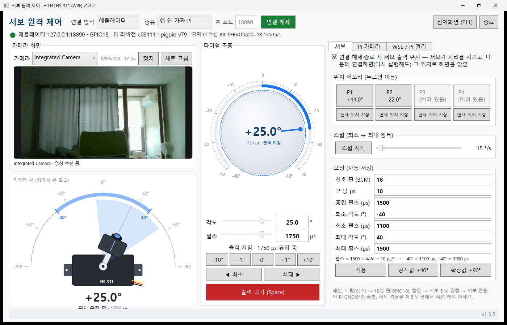
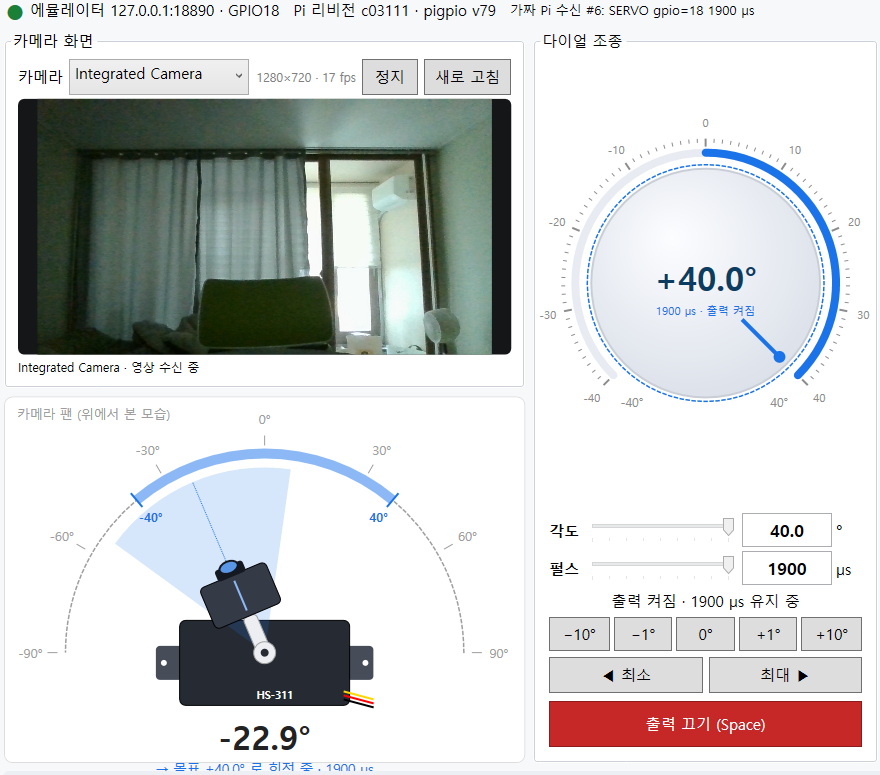
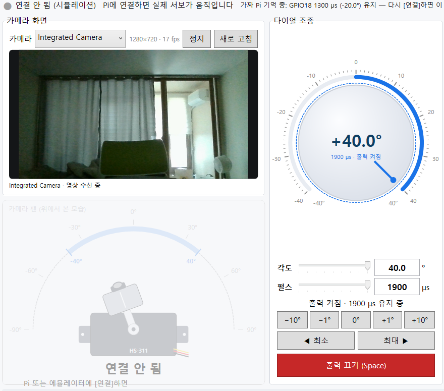
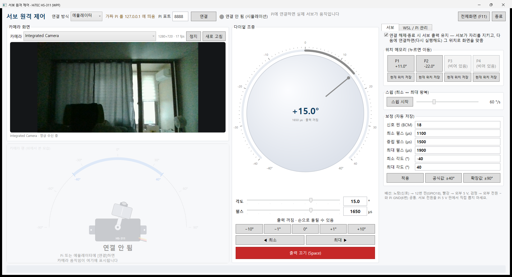
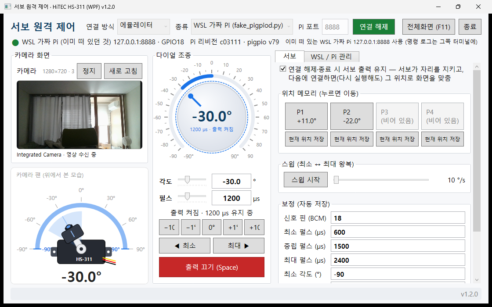
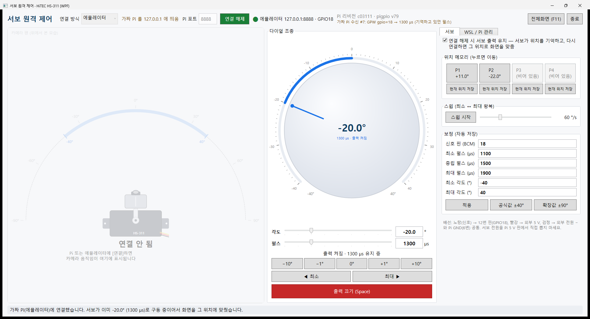
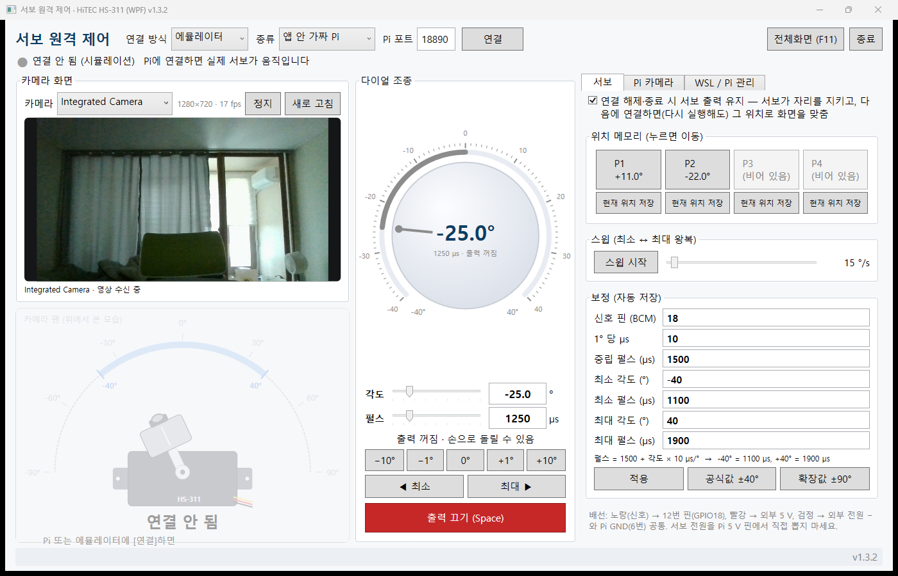
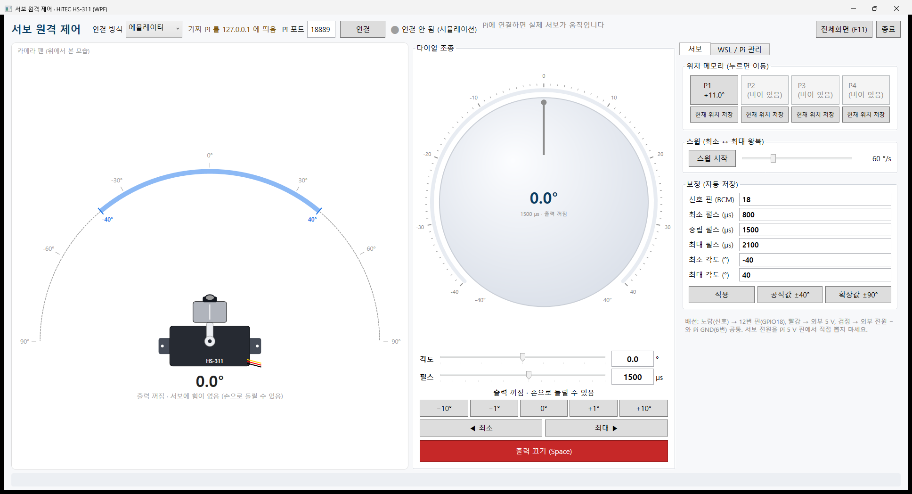

| 무엇 | 설명 |
|---|---|
| 서보가 움직이는 원리 | 서보는 20 ms 마다 오는 펄스의 길이로 각도를 받습니다. 1500 µs = 0°, 10 µs 마다 1°(HS-311). 펄스는 Pi 의 pigpiod 프로그램이 만들고, 우리 프로그램은 "GPIO18 을 1700 µs 로" 라는 16바이트 명령을 TCP(포트 8888)로 보낼 뿐입니다. |
| 프로그램 3개 | ① ServoControlWpf(Windows) — 다이얼·슬라이더로 조종, 카메라 화면, 설정. ② pi_display(Pi, Python) — Pi 모니터에 카메라 영상 + 서보 이동 로그, 영상을 HTTP 로 내보냄. ③ 에뮬레이터(가짜 pigpiod, Windows·리눅스 판) — Pi 없이 전부 시험. |
| 연결하는 세 가지 길 | 직접: Windows → LAN → 실제 Pi 의 8888 (Pi 가 PC 주소를 허용해야 함. 127.0.0.1 같은 자기 주소는 거부). WSL 터널: Windows → WSL 의 ssh → Pi (Pi 설정 불필요, 키 인증 필요, 무선에 권장). 에뮬레이터: 가짜 Pi — 종류를 고름: 앱 안 가짜 Pi 또는 WSL 가짜 Pi(앱이 WSL 에 fake_pigpiod.py 를 띄움). 어느 길이든 그 뒤는 같은 명령입니다. |
| 켜는 순서 | ① Pi: 서보 외부 5 V, pigpiod 켜짐. ② WPF 실행(Windows 에서 dotnet run 또는 WSL 에서 ./run-from-wsl.sh). ③ 연결 방식 고르고 [연결] → 화면이 서보의 현재 각도(GPW)로 맞춰짐. ④ [0°] → 조금씩 움직임 → 끝나면 [출력 끄기]. 창을 닫으면 설정과 마지막 각도가 저장됩니다. |
| Pi 없이 연습 | 연결 방식 "에뮬레이터" → 종류 앱 안 가짜 Pi(가장 쉬움) 또는 WSL 가짜 Pi(명령이 가상 네트워크를 실제로 건너감, 앱이 WSL 에 fake_pigpiod.py 를 띄움) → [연결]. Pi 화면 프로그램까지 보려면 WSL 에서 python3 pi_display/pi_display.py --no-gui --fake-camera 를 함께 띄움. |
| 안전 수칙 세 줄 | 서보 전원은 Pi 5 V 핀이 아니라 외부에서. 끝단에서 "지잉" 소리가 나면 범위를 줄인다. 끝낼 때는 [출력 끄기] 또는 창 닫기(펄스 0, 옵션에 따라 유지). |
| 버전·문서 | 버전은 VERSION 파일(지금 1.2.1, 창 제목에 표시), 변경 내역은 CHANGELOG.md. 코드 구조는 소스 설명 PDF, 명령어는 이 문서 17장. |
cd ~/MyJob/projects/comanyLinux/ServoChapter/ServoControlWpf (WSL 프로젝트) · ./run-from-wsl.sh (WPF 띄우기) · ./run-from-wsl.sh fakepi (가짜 Pi 를 터미널에서 — 앱의 "WSL 가짜 Pi" 가 재사용) · ./tools/setup_rpi_wireless.sh <Pi IP> <사용자> (ssh 준비) · ./pi_display/deploy_pi_display.sh rpi (Pi 화면 배포) · ssh rpi (Pi 접속)한 줄 요약: 서보는 "펄스 길이" 로 각도를 받는다. 그 펄스를 Raspberry Pi 의 pigpiod 가 만들어 주고, Windows 의 WPF 프로그램은 "GPIO18 을 1500 µs 로" 같은 16바이트 명령을 TCP 로 보내기만 한다. 명령을 보내는 길은 세 가지 — 직접, WSL 터널, 에뮬레이터(가짜 Pi) — 중에서 고른다.
| 연결 방식 | 명령이 가는 길 | 언제 쓰나 |
|---|---|---|
| ① 직접 연결 | WPF → LAN(이더넷·Wi-Fi) → 실제 Pi 192.168.10.2:8888 | 평소. Pi 에 pi_setup.sh 로 원격 허용을 해 둔 경우. 가장 빠름. 자기 주소(127.0.0.1·localhost)는 거부 |
| ② WSL 터널 | WPF → wsl.exe → ssh -L → Pi 의 127.0.0.1:8888 | 통신을 WSL/SSH 로 보내고 싶을 때. Pi 쪽 원격 허용 설정이 없어도 됨 |
| ③ 에뮬레이터 · 앱 안 가짜 Pi | WPF → 127.0.0.1 → 앱 안의 가짜 pigpiod | Pi 가 없을 때. 실제와 같은 TCP 명령 경로를 그대로 검증. 준비물 없음 |
| ③ 에뮬레이터 · WSL 가짜 Pi | WPF → 127.0.0.1 → (WSL2 localhost 포워딩) → WSL 의 python3 tools/fake_pigpiod.py | Pi 가 없을 때, 명령이 Windows 에서 리눅스로 실제 네트워크를 건너가는 모습까지 보고 싶을 때. 앱이 WSL 에 띄우고 종료 시 거둠 |
서보 사양서(HS-311), Raspberry Pi 4B 데이터시트, 그리고 Pi 쪽 준비 스크립트(pi_setup.sh·pi_info.sh, 지금은 tools\pi)가 출발 재료였습니다.
RC 서보는 "얼마나 긴 전기 신호를 받았느냐" 로 자기 팔(혼)을 어디에 둘지 정합니다. 20 ms(1초에 50번) 마다 짧은 High 펄스가 오는데, 그 펄스의 길이가 각도입니다.
| 것 | 역할 |
|---|---|
pigpiod (Pi 의 데몬) | GPIO 를 대신 다루는 프로그램. TCP 8888 로 16바이트 명령을 받아 서보 펄스를 만든다. 접속이 끊겨도 마지막 펄스를 계속 낸다 |
tools\pi\pi_setup.sh | (WSL 에서 한 번) Pi 에 pigpio 설치 + PC 주소에서 오는 접속 허용(-n). 직접 연결 모드에 필요 |
tools\pi\pi_info.sh | (WSL 에서) Pi 하드웨어·OS·개발 환경 정보를 pi_info.txt 로 수집 |
pigs (Pi 의 명령줄) | pigpiod 에 직접 명령. 예 pigs s 18 1500(서보 1500 µs), pigs gpw 18(현재 펄스) |
핵심 사실 세 가지.
rpi, 키 인증. pigpiod 는 127.0.0.1 과 PC 주소만 허용.요청은 "WPF 도 WSL 에 접근해서 라즈베리파이를 제어하는 프로그램" 이었습니다. 이 한 문장에는 해석이 여러 가지라서, 만들기 전에 네 가지를 물어 결정했습니다.
| 질문 | 선택지 | 결정 | 이유 |
|---|---|---|---|
| WPF 가 Pi 로 명령을 보내는 길은? | (a) 직접 TCP + WSL 은 스크립트용 (b) WSL SSH 터널만 (c) 둘 다 선택 가능 | (c) 둘 다 | 직접 연결은 빠르고 간단, 터널은 "WSL 을 거친다" 는 요구를 글자 그대로 만족하고 Pi 설정이 없어도 됨. 화면에서 고르게 함 |
| 기능 범위는? | 전체 기능 / 핵심 제어만 | 전체 기능 | 다이얼·위치 메모리·스윕·보정·설정 저장·단축키까지. (이후 왼쪽 게이지는 카메라 뷰로, 펄스폭은 입력 가능하게 발전 — 9장) |
| 이 PC 에 WSL 이 없는데? | 다른 PC 에서 실행 / 여기 설치 / ssh.exe 대체 | 다른 PC 에서 실행 | 여기서는 빌드·시뮬레이션·에뮬레이터로 검증. WSL 이 없으면 앱이 안내 메시지를 보여 주도록 함 |
| 프로젝트 위치·.NET 버전? | net8.0 / net10.0 | ServoChapter\ServoControlWpf, net8.0-windows | LTS. RollForward=LatestMajor 로 런타임 10 에서도 실행. (이후 웹캠 영상을 위해 net8.0-windows10.0.19041.0 으로 올림 — 9-3) |
작업 중에 추가된 요청 세 가지도 반영했습니다.
| 추가 요청 | 반영 |
|---|---|
| 설계 과정을 PDF 로, 별도 폴더에, 이해하기 쉽게 | 이 문서. 폴더 ServoControlWpf_설계문서. 기존 PDF 와 같은 방식(HTML → Chromium 인쇄) |
| 프로그램 운용 원리와 기법도 작성 | 10장 "운용 원리와 기법" |
| 지금 하드웨어가 없어서 에뮬레이션 필요 | 가짜 pigpiod 를 만들어 ① 앱 안의 "에뮬레이터" 연결 모드, ② 콘솔 프로그램 pigpio-emu, ③ 자동 테스트에 사용 |
pigs, pi_display)가 같은 pigpiod 를 함께 쓸 수 있습니다.직접 연결은 실제 Pi 의 LAN 주소에만 씁니다. Pi 주소 칸에 127.0.0.1·localhost·::1·0.0.0.0 을 넣고 [연결] 하면 "직접 연결은 실제 Pi(LAN 주소, 예 192.168.10.2 또는 172.30.1.81)에만 씁니다 … 가짜 Pi 로 연습하려면 연결 방식을 '에뮬레이터' 로" 라는 안내와 함께 거부합니다(MainViewModel.IsLoopbackHost). 자기 자신에게 "직접 연결" 한다는 것은 결국 같은 PC 의 가짜 서버에 붙는 것, 즉 에뮬레이션이기 때문입니다(4-5 절). 호스트 이름(raspberrypi.local)은 그대로 통과합니다.
WSL2 는 기본적으로 NAT 방식이라 WSL 안에서 보낸 패킷은 Windows 의 주소(192.168.10.1)로 바뀌어 나갑니다.
즉 Pi 의 pigpiod 는 지금까지도 "192.168.10.1 에서 온 접속" 을 받고 있었습니다. Windows 에서 직접 접속해도 Pi 가 보기에는 똑같은 주소이므로, pi_setup.sh 가 허용해 둔 목록을 그대로 씁니다.
앱이 실행하는 명령은 이것입니다.
wsl.exe [-d 배포판] -e ssh -N -o BatchMode=yes -o ExitOnForwardFailure=yes -o ConnectTimeout=5 \
-L 127.0.0.1:18888:127.0.0.1:8888 rpi
| 옵션 | 뜻 (쉽게) |
|---|---|
-N | 원격에서 명령을 실행하지 않고 "통로" 만 연다 |
-L 127.0.0.1:18888:127.0.0.1:8888 | 내 쪽 18888 로 들어온 것을 저쪽(Pi) 의 8888 로 보낸다 |
-o BatchMode=yes | 비밀번호나 "yes/no" 질문을 하지 않는다 (창이 없으니 물어봐도 답할 수 없음 → 키 인증 필수) |
-o ExitOnForwardFailure=yes | 포트를 못 열면 바로 종료 → 앱이 실패를 빨리 알 수 있음 |
앱은 터널을 띄운 뒤 127.0.0.1:18888 이 열릴 때까지 최대 10초 기다리고, 그 다음부터는 ①과 똑같은 RemotePigpioDriver 로 접속합니다.
이미 누가 18888 을 열어 두었다면(앱이 비정상 종료돼 ssh 가 남은 경우) 새로 띄우지 않고 그대로 씁니다. 연결 해제·종료 시 Process.Kill(entireProcessTree) 로 wsl.exe 와 그 안의 ssh 를 함께 닫습니다.
Pi 가 없을 때 그냥 화면만 움직이는 "시뮬레이션" 은 통신 코드를 전혀 검사하지 못합니다. 그래서 진짜 pigpiod 처럼 대답하는 가짜 서버를 만들었습니다.
0xc03111(Pi 4B), PIGPV → 79 를 돌려주므로 연결 바에 "Pi 리비전 c03111 · pigpio v79" 가 뜸.RemotePigpioDriver 를 쓴다. 다른 점은 접속 주소가 127.0.0.1 이라는 것뿐.가짜 Pi 를 어디에 둘지 — 에뮬레이터 종류 콤보. 연결 방식을 에뮬레이터로 고르면 옆에 "종류" 가 나타납니다.
| 종류 | 무슨 일이 일어나나 | 언제 고르나 |
|---|---|---|
| 앱 안 가짜 Pi (기본) | WPF 프로세스 안에서 PigpioEmulatorServer 가 127.0.0.1:(Pi 포트) 를 듣는다. 포트가 이미 쓰이면 빈 포트로 자동 대체(10-12) | 준비물 없이 가장 간단히. 상단에 "가짜 Pi 수신 #n: SERVO …" |
| WSL 가짜 Pi (fake_pigpiod.py) | 앱이 wsl.exe --cd tools -e python3 fake_pigpiod.py --port N --bind 0.0.0.0 으로 리눅스 프로세스를 띄우고(Model\WslFakePi), 포트가 열리면 127.0.0.1:N 으로 접속. WSL2 가 WSL 안의 포트를 Windows 의 127.0.0.1 로도 열어 주므로(localhost 포워딩) 명령은 Windows → 가상 네트워크 → 리눅스로 실제로 건너간다. 가짜 Pi 의 stdout(받은 명령)이 상단에 "WSL 가짜 Pi: 10:22:26 ✓ SERVO gpio=18 1750 µs → 목표 +25.0°" 로 그대로 보임. 그 포트가 이미 열려 있으면(사용자가 터미널에서 ./run-from-wsl.sh fakepi 를 띄워 둠, 또는 pigpio-emu) 새로 띄우지 않고 재사용 — "이미 떠 있는 WSL 가짜 Pi 사용 (명령 로그는 그쪽 터미널에)". 앱이 띄운 것은 창을 닫을 때 함께 끝나고, 위치 기억은 ~/.config/VI/fake_pigpiod.json 에 남는다 | "Pi 대신 리눅스가 응답해도 프로그램은 구별하지 못한다" 를 눈으로 보고 싶을 때. WSL 쪽 프로그램(pi_display)과 같은 가짜 Pi 를 공유할 때 |
두 종류 모두 가짜 서버(프로세스)는 드라이버가 아니라 MainViewModel 이 들고 있어 [연결 해제] 뒤에도 살아 있고 위치를 기억합니다(10-10). 해제 중 상단에는 "가짜 Pi 기억 중: …" / "WSL 가짜 Pi 기억 중: GPIO18 1700 µs (+20.0°) 유지" 가 보입니다.
| ① 직접 (실제 Pi) | ② WSL 터널 | ③ 에뮬레이터 · 앱 안 | ③ 에뮬레이터 · WSL 가짜 Pi | |
|---|---|---|---|---|
| 필요한 것 | Pi + pigpiod 원격 허용(pi_setup.sh) + Pi 의 LAN 주소 | Pi + WSL + ssh 키 인증(별명 rpi) | 없음 | WSL + python3 (tools\fake_pigpiod.py 는 프로그램에 포함) |
| 명령 지연 | LAN 수 ms | SSH 암호화 추가, 보통 10 ms 이내 | 1 ms 이내 | 1~2 ms (가상 네트워크) |
| Pi(또는 가짜) 가 보는 접속 주소 | 192.168.10.1 | 127.0.0.1 | 127.0.0.1 | WSL 의 가상 NIC 주소(172.x) 또는 127.0.0.1 |
| 장점 | 가장 단순·빠름 | 암호화, Pi 설정 불필요, "WSL 경유" 요구 충족 | Pi 없이 통신 코드 검증, 교육·시연 | Windows ↔ 리눅스 네트워크를 실제로 건너는 연습, WSL 쪽 프로그램과 가짜 Pi 공유 |
| 단점 | pigpiod 가 허용 주소를 알아야 함. 자기 주소 불가 | WSL·ssh 준비 필요, 터널 여는 데 1~3초 | 실제 서보 반응은 볼 수 없음 | WSL 첫 기동에 1~3초, 실제 서보 반응은 볼 수 없음 |
구현은 Model\WslFakePi.cs(WslSshTunnel 과 같은 골격: wsl.exe 프로세스 → 포트가 열릴 때까지 대기 → 종료 시 트리째 정리)와 MainViewModel.IsLoopbackHost 입니다. 상세는 소스 설명 PDF, 확인은 12-1 의 WslFakePiTests·EmulatorModeTests 와 12-2.
pi_display 가 HTTP(8889)로 내보내고 WPF 가 받습니다(15장).
HTTP 서버는 모든 주소(0.0.0.0)에서 듣고 허용 목록이 없으므로 Wi-Fi IP 로 바로 닿습니다. 터널 모드에서는 Pi 주소 칸이 없어 카메라 URL 을 직접 적습니다.WPF 의 표준 구조인 MVVM(Model-View-ViewModel) 에 Services 층을 더했습니다. View 와 ViewModel 은 "바인딩" 으로 자동 연결됩니다 — XAML 의 {Binding Angle} 한 줄이 "값이 바뀌면 화면도 바뀐다" 를 뜻합니다.
| 파일 (ServoControlWpf\) | 층 | 역할 |
|---|---|---|
Model\ServoSpec.cs | Model | 서보 사양(펄스 3개·각도 2개·GPIO)과 각도↔펄스 변환. record struct |
Model\IServoDriver.cs · ServoException.cs | Model | "펄스를 내보내는 장치" 규격. 실패는 ServoException(LinkLost 플래그) |
Model\PigpioClient.cs + RemotePigpioDriver.cs | Model | 16바이트 규약(Client)과 서보 동작(Driver)을 둘로 나눠 가짜 서버로 단위 테스트 가능. 직접·터널·에뮬레이터 모두 이 드라이버 하나 |
Model\SimulatedDriver.cs | Model | 연결 전·해제 후에 꽂혀 있는 빈 드라이버 (화면만 동작) |
Model\WslSshTunnel.cs | Model | 터널 모드: wsl.exe -e ssh -L 프로세스의 수명 관리 |
Model\WslFakePi.cs | Model | 에뮬레이터 종류 "WSL 가짜 Pi": wsl.exe … python3 fake_pigpiod.py 프로세스의 수명 관리, 받은 명령 줄 전달 |
Model\ServoModel.cs | Model | 현재 각도·출력·사양·드라이버를 기억하는 상태 관리자. 바뀌면 Changed 이벤트 |
Model\AppSettings.cs | Model | 설정 JSON (%APPDATA%\VI\ServoControl.json) |
Services\WslService.cs · ProcessRunner.cs | Services | wsl.exe 호출, 스크립트/ssh 실행, 출력 스트리밍 |
Services\WinRtCameraSource.cs · MjpegCameraSource.cs · CompositeCameraSource.cs | Services | 웹캠(WinRT) · Pi 네트워크 카메라(MJPEG) · 둘을 하나의 목록으로 |
ViewModel\MainViewModel.cs | ViewModel | 프로그램의 두뇌: 연결·각도·펄스·스윕·메모리·보정·설정. _syncing 플래그로 되돌아오는 명령을 막음 |
ViewModel\WslViewModel.cs · CameraViewModel.cs | ViewModel | WSL / Pi 관리 탭 · 카메라 패널 |
View\ServoCameraView.cs | View | 서보에 올려진 카메라의 움직임을 위에서 본 그림(표시 전용, 연결 시에만 회전) |
View\ServoDial.cs | View | 직접 그린 원형 노브. 270° 스윕, 눈금, 드래그·휠·방향키, UI 자동화 RangeValue |
View\MainWindow.xaml(.cs) · App.xaml.cs | View | 배치·바인딩 / 조립과 종료 처리 |
PigpioEmulator\ · PigpioEmulatorCli\ · tools\fake_pigpiod.py | 도구 | 가짜 pigpiod 라이브러리 · 콘솔 · 리눅스 판 |
pi_display\ | Pi | Pi 모니터용 카메라 영상 + 서보 이동 로그 + MJPEG 서버 (Python, 15장) |
ServoChapter\ ├─ ServoControlWpf\ ★ WPF 솔루션 (버전은 VERSION 파일, 변경 내역은 CHANGELOG.md) │ ├─ ServoControlWpf.sln · README.md · VERSION · CHANGELOG.md · Directory.Build.props(.targets) │ ├─ ServoControlWpf\ 앱 (Model · ViewModel · View · Services) │ ├─ ServoControlWpf.Tests\ xUnit 137개 │ ├─ PigpioEmulator\ 가짜 pigpiod 라이브러리 │ ├─ PigpioEmulatorCli\ 가짜 pigpiod 콘솔 (pigpio-emu) │ ├─ pi_display\ Pi 모니터용 Python 프로그램 (카메라 영상 + 서보 이동 로그 + MJPEG 서버) │ ├─ tools\ fake_pigpiod.py · setup_rpi_wireless.sh · bump-version · portcheck │ │ └─ pi\ pi_setup.sh · pi_info.sh (Pi 관리 스크립트) │ └─ run-from-wsl.sh WSL 셸에서 띄우기 └─ ServoControlWpf_설계문서\ ★ 이 문서 + 소스 설명 (HTML 원본 + PDF + 화면 캡처)
다이얼을 돌렸을 때 일어나는 7단계입니다. 번호를 따라가 보세요.
MainViewModel.Angle 에 값을 넣음_model.SetAngle(angle)ServoSpec.AngleToPulse() 로 펄스 계산 → driver.WritePulse(µs)res 확인Changed 이벤트_syncing = true 상태로 Angle·Pulse·IsOutputOn 등 PropertyChanged → 다이얼·각도 줄·펄스 줄 갱신, 왼쪽 카메라 뷰는 (연결된 상태라면) 새 목표를 향해 서보 속도로 회전 시작. 연결 해제 상태면 카메라 뷰는 움직이지 않음_syncing 플래그가 켜져 있으면 Angle setter 가 값만 저장하고 명령을 보내지 않습니다.펄스 줄(슬라이더·입력칸)을 바꾸면 ViewModel 의 PulseInput setter 가 받습니다. 사양 범위(최소~최대 펄스)로 자른 뒤 ServoSpec.PulseToAngle() 로 각도를 구해 위 2번부터 같은 길을 갑니다.
즉 모델이 기억하는 것은 언제나 "각도" 하나이고, 펄스폭은 사양으로 계산한 값입니다. 그래서 7번 갱신 때 각도 줄·다이얼·카메라 뷰·펄스 줄이 모두 같은 상태를 보여 주고, 보정값을 바꾸면 펄스 줄의 범위와 값도 함께 바뀝니다.
| 입력 | 따라 바뀌는 것 |
|---|---|
| 각도 줄 / 다이얼 / ± 버튼 | 펄스 줄 = AngleToPulse(각도), 서보 출력, 카메라 뷰 회전 |
| 펄스 줄 (예 1650 µs) | 각도 = PulseToAngle(1650) = 15.0°, 다이얼·각도 줄, 서보 출력, 카메라 뷰 회전 |
| 범위 밖 펄스 (예 2400, 공식값일 때) | 최대 1900 µs 로 잘려 40° |
| 보정 적용 (예 확장값) | 펄스 줄 범위 600~2400, 현재 각도에 맞는 펄스로 다시 계산 |
4번에서 실패하면 ServoException 이 올라옵니다. LinkLost 가 true(연결 끊김·시간 초과) 이면 ViewModel 이 먼저 연결을 정리(시뮬레이션 드라이버로 교체, 이전 드라이버가 재접속해 0 전송) 하고 오류 창을 띄웁니다.
pigpio 가 거부한 오류(−7 등) 는 연결을 유지한 채 메시지만 보여 줍니다. 어느 경우든 Model 의 각도는 바뀌지 않으므로 화면이 "실제 서보 상태" 와 어긋나지 않습니다.
pigpiod 는 TCP 8888 로 명령을 받습니다. 요청과 응답은 모두 4바이트 정수 4개(리틀엔디언 = 낮은 바이트가 먼저) 입니다.
| 구분 | 바이트 0~3 | 4~7 | 8~11 | 12~15 |
|---|---|---|---|---|
| 요청 | cmd (명령 번호) | p1 | p2 | p3 (= 0) |
| 응답 | cmd (같은 값) | p1 | p2 | res (0 이상 성공, 음수 오류) |
| 명령 | 번호 | p1 / p2 | 용도 |
|---|---|---|---|
| SERVO | 8 | GPIO 번호 / 펄스폭(µs) | 서보 펄스 설정. 0 이면 출력 끔. 500~2500 만 허용 |
| HWVER | 17 | — / — | 연결 직후 Pi 하드웨어 리비전 읽기 (예 0xc03111 = Pi 4B) |
| PIGPV | 26 | — / — | 연결 직후 pigpio 버전 읽기 |
예) "GPIO18 을 1500 µs 로" → 08 00 00 00 · 12 00 00 00 · dc 05 00 00 · 00 00 00 00
(8 = SERVO, 18 = 0x12, 1500 = 0x05dc)
C# 에서는 BinaryPrimitives.WriteUInt32LittleEndian(req[0..4], cmd) 처럼 넣는다.
이 바이트 열이 정확히 나가는지는 자동 테스트 Servo_SendsExactly16BytesLittleEndian 이 가짜 서버로 받아서 확인합니다. 오류 코드는 한글로 바꿔 보여 줍니다: −2 "사용할 수 없는 GPIO 번호", −7 "펄스폭은 0 또는 500~2500 µs", −41 "권한 없음".
wsl.exe 를 자식 프로그램으로 띄워 리눅스 명령(스크립트, ssh)을 대신 실행하고 그 출력을 로그 창에 보여 줍니다. 함정 두 가지: wsl -l 같은 관리 명령은 글자 인코딩이 다르고(UTF-16), sudo 비밀번호가 필요한 스크립트는 보이는 터미널 창에서 열어야 합니다.Windows 프로그램이 WSL 을 쓰는 가장 확실한 방법은 wsl.exe 를 실행하는 것입니다. WPF 앱은 다음 네 가지 모양으로 부릅니다.
| 하는 일 | 실행하는 명령 | 비고 |
|---|---|---|
| WSL 이 있나, 배포판은? | wsl.exe -l -q | 출력이 UTF-16LE → Encoding.Unicode 로 읽어야 함 (안 그러면 글자 사이에 빈 문자가 끼어 깨짐) |
| 스크립트 실행 | wsl.exe [-d 배포판] --cd "D:\…\ServoControl" -e bash ./pi_info.sh rpi | --cd 가 Windows 경로를 /mnt/d/… 로 자동 변환. 출력은 UTF-8 |
| Pi 에 명령 한 줄 | wsl.exe -e ssh -o BatchMode=yes -o ConnectTimeout=5 rpi "systemctl is-active pigpiod" | 키 인증 필수 (비밀번호를 받을 창이 없음) |
| 터널 열기 | wsl.exe -e ssh -N -L 127.0.0.1:18888:127.0.0.1:8888 rpi | 4-2 절 |
pi_setup.sh 는 Pi 에서 sudo apt-get install 을 하고 ssh -t 로 접속합니다. 비밀번호를 물어볼 수 있는데, 출력을 가로채는 "보이지 않는 실행" 에서는 답을 입력할 방법이 없어 멈춰 버립니다.
그래서 이 스크립트만 콘솔 창을 그대로 띄워(CreateNoWindow=false) 사람이 직접 입력할 수 있게 했습니다. 나머지(pi_info.sh, Pi 화면 배포, ssh 명령) 는 출력을 앱의 로그 창에 실시간으로 보여 줍니다.모든 외부 실행은 Services\ProcessRunner 한 곳을 거칩니다: 줄 단위로 stdout/stderr 를 받아 UI 스레드로 넘기고, [취소] 를 누르면 프로세스 트리를 통째로 끝냅니다. WSL 이 없는 PC 에서는 "이 PC에 WSL이 설치되어 있지 않습니다. 'wsl --install' 로 설치하세요." 를 보여 주고 앱은 계속 동작합니다(이 PC 에서 확인됨).
세 칸 배치입니다. 오른쪽 칸은 탭 두 개("서보", "WSL / Pi 관리") 로 나눴습니다.

| 영역 | 위젯 | 내보내는 명령 (ViewModel) |
|---|---|---|
| 상단 연결 바 | 연결 방식 콤보(직접/WSL 터널/에뮬레이터), 에뮬레이터면 종류 콤보(앱 안 / WSL 가짜 Pi, 설명은 툴팁), Pi 주소·포트 또는 ssh 별명·배포판·로컬 포트, [연결] 토글, [전체화면][종료] | ConnectToggleCommand |
| 연결 정보 줄 (연결 바 아래) | ● 표시등, 장치 이름("WSL 가짜 Pi 127.0.0.1:8888 · GPIO18"), "Pi 리비전 … · pigpio v…", 가짜 Pi 수신 글. 창 폭 전체를 쓰고, 긴 글은 글꼴을 자동으로 줄이거나(최소 10~11pt) … + 툴팁(9-5) | 읽기만 (DriverName·ConnInfoText·EmulatorText) |
| 왼쪽 카메라 뷰 | ServoCameraView — 위에서 내려다본 서보 본체(HS-311)와 혼 위의 카메라, 카메라 시야(FOV 62°) 쐐기, 허용 범위 호와 끝 표시, 30° 눈금, 현재 각도·목표·펄스·상태 글자. 표시 전용(마우스 입력 없음). 연결됐을 때만 움직이고, 해제 상태에서는 "연결 안 됨" 안내만 표시 | 없음 (Angle·IsOutputOn·Pulse·IsConnected 를 읽기만 함) |
| 가운데 다이얼 조종 | 원형 다이얼 ServoDial(노브를 끌어 돌림, 휠 1칸 = 1°, ←/→ 1°, PgUp/PgDn 10°, 가운데 각도·펄스폭 표시), 각도 줄(슬라이더 + 입력칸 °) 과 펄스 줄(슬라이더 + 입력칸 µs) — 어느 쪽을 바꿔도 다른 쪽이 따라 바뀜, 출력 상태, −10/−1/0°/+1/+10, 최소/최대, [출력 끄기] | Angle · PulseInput 양방향 바인딩, NudgeCommand, CenterCommand, GoMin/GoMaxCommand, ReleaseCommand |
| 탭 "서보" | 위치 메모리 P1~P4(이동 + 현재 위치 저장), 스윕 시작/정지 + 속도 5~200 °/s, 보정 6칸 + [적용][공식값][확장값], 배선 메모 | PresetRecall/StoreCommand, ToggleSweepCommand, ApplySpec/Official/ExtendedCommand |
| 탭 "WSL / Pi 관리" | WSL 상태 + [WSL 확인], 배포판·ssh 별명·스크립트 폴더, [Pi 상태 확인][pi_info.sh][pi_setup.sh ↗][Pi 화면 배포][Pi 화면 배포(+apt) ↗][취소], ssh 명령 입력, 검은 로그 창 | WslViewModel 의 커맨드들 |
| 상태 바 | 4초 뒤 사라지는 안내문 | StatusText |
키보드: ←/→ = 1° 이동, Space = 출력 끄기, F11 = 전체화면. 색: 제목 22px #0b3d63, 출력 끄기 빨강 #c62828, 연결됨 초록 #1a7f37.
WPF 에는 기본 다이얼 컨트롤이 없습니다. 처음에는 슬라이더로 대신했지만 "다이얼 조종" 이라는 이름과 맞지 않아, FrameworkElement 를 상속해 직접 그리는 노브를 만들었습니다.
atan2 로 구해 값으로 바꾼다(1° 단위로 맞춤). 아래쪽 빈 90° 구간을 가리키면 가까운 끝으로. 휠 1칸 = 1°, 포커스가 있으면 ←/→ 1°, PgUp/PgDn 10°, Home/End 끝.Value 가 양방향 바인딩이라 ViewModel.Angle 과 바로 묶인다. 모델이 바뀌면 다이얼이 따라 돌고, 다이얼을 돌리면 6장의 흐름대로 서보 명령이 나간다.처음에는 왼쪽에 반원 "미터기" 게이지를 두고 드래그로도 조종하게 했지만, 조종은 다이얼 하나로 충분하고 왼쪽은 "지금 모터가 실제로 어떻게 움직이는가" 를 보여 주는 편이 직관적이라 바꿨습니다. 이 프로젝트의 서보는 카메라를 좌우로 돌리는(팬) 용도이므로, 위에서 내려다본 서보 본체 위에 카메라를 올린 그림을 그립니다.
IsHitTestVisible = false 로 마우스를 전혀 받지 않습니다. 눌러도 각도가 바뀌지 않습니다(자동 테스트로 확인).Angle 은 "명령한 목표" 이고, 그림의 카메라는 그 목표를 향해 HS-311 속도(0.19 s/60° ≈ 316 °/s)로 회전합니다. 그래서 −40° → +40° 명령을 주면 약 0.25 초 동안 돌아가는 모습이 보이고, 글자에 "→ 목표 +40.0° 로 회전 중" 이 표시됩니다.IsConnected 가 바인딩되어 있어, 연결 해제 상태에서는 다이얼·각도·펄스를 아무리 바꿔도 카메라는 제자리입니다. 그림은 반투명 막으로 흐려지고 "연결 안 됨 — Pi 또는 에뮬레이터에 [연결]하면 카메라 움직임이 여기에 표시됩니다" 안내만 보입니다.
이유는 단순합니다. 연결이 없으면 서보로 명령이 나가지 않으므로 실제 모터도 움직이지 않는데, 화면이 움직이면 "지금 모터가 돌고 있다" 는 거짓 정보가 됩니다.
구동 조건은 연결됨 AND 출력 켜짐 하나로 묶었고(IsDriven), 연결 직후 출력이 꺼진 상태에서는 회색 카메라가 마지막 위치에 머물다가 첫 명령으로 출력이 켜질 때 목표를 향해 출발합니다. 연결을 끊으면 회전 중이던 카메라도 그 자리에서 멈춥니다(실제 서보도 힘이 빠지면 그 자리에 머묾).

서보에 올린 카메라가 "실제로 무엇을 보고 있는가" 를 같은 창에서 보고 싶다는 요청으로, 왼쪽을 위·아래로 나눠 위에는 실제 카메라 영상, 아래에는 9-2 의 서보 그림을 두었습니다. 아직 Pi 에 카메라가 없으므로 지금은 노트북 내장 카메라로 동작을 확인하고, 나중에 Pi 카메라를 같은 자리에 붙입니다.
MediaCapture + MediaFrameReader)를 씁니다. 이를 위해 앱의 대상 프레임워크를 net8.0-windows10.0.19041.0 으로 올렸고(출력 폴더 이름이 바뀜), 데스크톱 앱 카메라 권한(Windows 설정 > 개인 정보 및 보안 > 카메라)이 필요합니다.WriteableBitmap 한 장을 계속 덮어씀 → Image 에 바인딩. 화면이 바쁘면 프레임을 건너뛰어 밀리지 않게 합니다(1280×720 에서 약 17 fps).ICameraSource(목록·시작·정지·프레임 이벤트) 뒤에 숨겨 두었습니다. 구현은 웹캠(WinRtCameraSource)과 Pi 네트워크 카메라(MjpegCameraSource)를 CompositeCameraSource 로 하나처럼 묶은 것이라(9-4) 화면·뷰모델은 소스가 둘인지 모릅니다. 테스트는 가짜 FakeCameraSource 로 뷰모델 동작(기본 장치 선택, 저장된 장치 우선, 장치 없음 안내, 꺼짐 전환, 오류 표시, 프레임 → 비트맵)을 검사합니다.
같은 콤보박스에 Pi 의 pi_display 가 내보내는 MJPEG 스트림이 한 항목으로 들어갑니다. 고르면 URL 줄이 나타나고(비우면 "Pi 주소:8889" 로 자동), 영상은 웹캠과 똑같은 자리에 같은 방식으로 그려집니다.
구조상 CompositeCameraSource 가 웹캠(WinRtCameraSource)과 네트워크(MjpegCameraSource)를 하나의 목록으로 합쳐 CameraViewModel 에 넘기므로, 뷰모델·화면은 소스가 둘인지 모릅니다. 웹캠 권한이 없어도 Pi 항목은 보입니다. 상세는 15장.
View\ShrinkTextBlock — TextBlock 하나를 품은 작은 컨트롤. WPF 가 Measure 때 넘겨주는 "쓸 수 있는 폭"(MaxWidth 가 있으면 그것)을 예산으로 삼아, 글의 자연 폭(FormattedText)이 예산보다 크면 글꼴을 비례로 줄입니다. TextBlock 을 그대로 상속하지 않은 이유는 그 Measure 가 봉인되어 있고, 잘려 그려져도 ActualWidth 는 글 전체 폭을 보고하기 때문입니다(18장).
이 장은 "프로그램을 어떻게 돌리고, 왜 그렇게 해야 하는가" 를 다룹니다. 처음 운용하는 사람은 10-6 절차와 10-7 안전 수칙만 먼저 읽어도 됩니다.
AngleToPulse 가 이 비례식을 계산합니다(중립 기준으로 + 쪽, − 쪽 따로).리눅스 프로그램이 GPIO 를 직접 켰다 껐다 하면 운영체제의 다른 작업 때문에 타이밍이 흔들려 서보가 떨립니다. pigpiod 는 Pi 의 DMA 하드웨어로 펄스를 만들기 때문에 µs 단위로 정확하고, 한 번 "GPIO18 에 1500 µs" 라고 하면 다음 명령이 올 때까지 스스로 계속 내보냅니다.
pigs s 18 0 으로 끌 수 있습니다.| 상황 | Pi 의 pigpiod 가 보는 출발 주소 | 허용되려면 |
|---|---|---|
| WSL 안의 프로그램 (WSL2 NAT 안) | 192.168.10.1 (Windows 호스트) | pigpiod -n 127.0.0.1 -n 192.168.10.1 (pi_setup.sh 가 설정) |
| WPF 직접 연결 | 192.168.10.1 | |
| WPF WSL 터널 | 127.0.0.1 (Pi 자신) | 기본 설정 그대로 허용 |
| Pi 안의 프로그램 (pi_display, pigs) | 127.0.0.1 | 기본 설정 그대로 허용 |
WSL2 네트워크를 "미러 모드" 로 바꾼 PC 라면 WSL 도 자기 주소를 그대로 쓰므로, 그때는 pi_setup.sh rpi <WSL 주소> 로 허용 주소를 하나 더 넣어야 합니다. 터널 모드는 이 문제와 무관합니다.
ssh rpi 가 비밀번호 없이 들어가는지 확인합니다. 안 되면 ssh-keygen 후 ssh-copy-id rpi.~/.ssh/config 에 별명이 있어야 합니다: Host rpi
HostName 192.168.10.2
User userssh -N -L 127.0.0.1:18888:127.0.0.1:8888 rpi 를 한 창에서 띄우고, WPF 를 "에뮬레이터 · WSL 가짜 Pi · Pi 포트 18888" 로 접속합니다(포트가 이미 열려 있으면 새로 띄우지 않고 그 포트에 붙으므로 터널 끝의 실제 pigpiod 에 닿음).pkill -f "ssh -N".서보는 개체마다 중립과 끝단이 조금씩 다릅니다. 보정은 "중립 → 끝단 → 저장" 순서입니다.
%APPDATA%\VI\ServoControl.json). [공식값 ±40°] 로 언제든 되돌릴 수 있습니다.| # | 할 일 | 확인할 것 |
|---|---|---|
| 1 | 배선 확인 후 서보 외부 5 V 전원 → Pi 전원 순서로 켬 | GND 가 Pi·외부 전원·서보 셋 다 묶였는지. 서보 + 선은 Pi 5 V 핀에 꽂지 않음 |
| 2 | WPF 실행 → 탭 "WSL / Pi 관리" → [WSL 확인] → [Pi 상태 확인] | 로그에 pigpiod: active. 아니면 [pi_setup.sh ↗] |
| 3 | 연결 방식 선택 → [연결] | 상단에 "Pi 리비전 … · pigpio v…" 와 초록 ● |
| 4 | [0°] 먼저 | 혼이 중앙으로. 안 움직이면 10-9 문제 해결표 |
| 5 | 다이얼, ±1°, ±10°, 각도 줄·펄스 줄로 이동 | 펄스폭이 10 µs/° 로 따라 바뀌고, 왼쪽 카메라가 그 방향으로 돌아감. 실제 서보와 그림이 같이 움직이는지 확인 |
| 6 | 필요하면 10-5 보정, 위치 메모리 P1~P4 저장 | |
| 7 | 스윕은 낮은 속도(30~60 °/s) 부터 | 끝단에서 소리가 나면 범위를 줄임 |
| 8 | 쉴 때는 [출력 끄기] (Space) | 서보가 손으로 돌아감 = 힘이 빠짐. 발열·전류 감소 |
| 9 | 끝낼 때 [연결 해제] 또는 창 닫기 | 창 닫기는 항상 펄스 0 전송. [연결 해제] 는 "출력 유지" 옵션(기본 켜짐)이면 서보가 위치를 지키고, 끄면 펄스 0. 그 다음 서보 전원 끔 |
pigs 등)와 WPF 가 동시에 명령하면 마지막 명령이 이깁니다. 헷갈리니 한쪽만 씁니다. (pi_display 는 읽기만 하므로 괜찮음)| 방법 | 절차 |
|---|---|
| A. 앱 안 가짜 Pi (가장 쉬움) | 연결 방식 에뮬레이터 · 종류 앱 안 가짜 Pi → [연결]. 상단에 "Pi 리비전 c03111 · pigpio v79" 와 명령마다 "가짜 Pi 수신 #n: SERVO gpio=18 1700 µs". 그 뒤는 실제와 똑같이 조작. |
| B. WSL 가짜 Pi | 연결 방식 에뮬레이터 · 종류 WSL 가짜 Pi (fake_pigpiod.py) → [연결]. 앱이 WSL 에 리눅스 가짜 Pi 를 띄우고(상태 줄 "WSL 확인 중… → 띄우는 중… → 준비됨") 붙음. 상단에 그 프로세스가 찍은 "WSL 가짜 Pi: ✓ SERVO gpio=18 1750 µs → 목표 +25.0°". 창을 닫으면 프로세스도 끝남. |
| C. 미리 띄운 가짜 Pi 에 붙기 | WSL 터미널에서 ./run-from-wsl.sh fakepi, 또는 Windows 콘솔에서 dotnet run --project PigpioEmulatorCli(pigpio-emu) 를 먼저 띄운 뒤 B 와 같이 [연결]. 그 포트가 이미 열려 있으므로 앱은 새로 띄우지 않고 그것을 쓰고, 명령 로그는 그 터미널에 찍힘(pigpio-emu 는 위치 막대까지). 명령 로그를 터미널에서 보고 싶을 때, pi_display 와 같은 가짜 Pi 를 공유할 때, 또 WSL 에 sshd 를 넣어 "WSL 터널" 모드까지 시험할 때(13-2). |
| D. WSL 쪽 프로그램으로 시험 | dotnet run --project PigpioEmulatorCli -- 8888 0.0.0.0 로 모든 주소에서 듣게 한 뒤, WSL 의 pi_display.py --pigpio-host <Windows 호스트 IP>(WSL 에서 ip route | grep default)가 그 가짜 Pi 를 폴링해 로그로 보여 줌. (Windows 방화벽이 물으면 허용) |
에뮬레이터는 펄스 검사·리비전 응답·서보 속도(0.19 s/60°) 까지 흉내 내지만, 실제 부하·끝단·전원 문제는 재현하지 못합니다. "통신과 프로그램 논리" 를 검증하는 도구로 쓰고, 보정값은 실제 서보로 다시 맞추세요. 실제 Pi 가 생기면 연결 방식을 직접 연결, Pi 주소를 Pi 의 LAN 주소로 바꾸면 끝입니다(Pi 쪽 pi_setup.sh 선행).
| 증상 | 원인 | 조치 |
|---|---|---|
| [연결] 하면 "연결할 수 없습니다" | Pi 꺼짐 / 케이블 / pigpiod 꺼짐 / 허용 주소 아님 | [Pi 상태 확인] → pigpiod: active 인지. 아니면 [pi_setup.sh ↗]. 또는 WSL 터널 모드로 전환 |
| "WSL 안의 ssh 가 바로 종료" | 키 인증 안 됨, 별명 없음, 호스트 키 미확인 | WSL 터미널에서 ssh rpi 가 되게 만든 뒤 재시도(10-4) |
| "10초 안에 터널 포트가 열리지 않았습니다" | Pi 응답 없음, 이더넷 끊김 | ping 192.168.10.2, 케이블·고정 IP 확인 |
| 연결은 됐는데 서보가 안 움직임 | 서보 전원 없음 / GND 안 묶임 / 신호선 핀 틀림 / 3.3 V 인식 실패 | 펄스폭 숫자가 바뀌면 프로그램은 정상. 배선(12번 핀, GND 6번), 외부 5 V, 레벨 변환 확인 |
| 서보가 떨린다 | 전원 부족, GND 불량, 끝단 걸림 | 2 A 이상 전원, GND 공통, 범위 줄이기 |
| "펄스폭은 0 또는 500~2500 µs" | 보정값이 pigpio 허용 밖 | 최소 ≥ 500, 최대 ≤ 2500 으로 수정 |
| 에뮬레이터(앱 안) 연결 뒤 상단에 "임시 포트 NNNN" 안내 | 포트 8888 을 다른 프로그램(pigpio-emu, WSL fakepi 등) 이 사용 | 그대로 써도 됨. 그 프로그램에 붙고 싶으면 에뮬레이터 종류를 WSL 가짜 Pi 로(이미 열린 포트를 재사용) — 10-12 |
| 직접 연결에 127.0.0.1 → "직접 연결은 실제 Pi(LAN 주소)에만 씁니다" | 자기 주소는 직접 연결에서 거부(4-5) | 연결 방식을 에뮬레이터 로 바꾸고 종류(앱 안 / WSL 가짜 Pi)를 고름. 실제 Pi 면 Pi 의 LAN 주소 입력 |
| WSL 가짜 Pi → "WSL 의 fake_pigpiod.py 가 바로 종료되었습니다" / "10초 안에 … 포트가 열리지 않았습니다" | WSL 에 python3 없음, tools 폴더 못 찾음, WSL 첫 기동 지연 | WSL 에서 python3 --version; 프로그램 폴더에 tools\fake_pigpiod.py 가 있는지; 한 번 더 [연결]. 급하면 종류를 "앱 안 가짜 Pi" 로 |
| 닫았는데 서보가 힘을 주고 있음 | 비정상 종료로 0 을 못 보냄 | 다시 연결 후 [출력 끄기], 또는 Pi 에서 pigs s 18 0 |
| WSL 탭 글자가 깨짐 | UTF-16/UTF-8 혼동 | 앱은 -l 은 UTF-16, 나머지는 UTF-8 로 처리함. 스크립트 자체가 다른 인코딩이면 iconv |
WSL 셸에서 ./ServoControlWpf.exe 가 "Permission denied" | Windows 에서 복사한 파일에 실행 비트가 없음 | chmod +x 또는 ./run-from-wsl.sh 사용 |
| WSL 터널: "ssh: Could not resolve hostname rpi" | WSL 의 ~/.ssh/config 에 Host rpi 가 없음 | 10-4 절대로 별명·키 등록. Pi 가 없으면 13-2 의 WSL sshd 로 대신 |
처음 만든 판은 "화면이 명령한 각도" 만 기억했습니다. 그래서 연결을 끊었다가 다이얼을 돌려 놓고 다시 연결하면, 다이얼은 +40° 를 가리키는데 서보는 −20° 에 있는 어긋난 상태에서 조작이 시작됐습니다. 사용자 요청에 따라 두 가지를 더했습니다.
GPW(84번) 명령이 있어 "이 GPIO 의 서보 펄스폭이 얼마냐" 를 물을 수 있습니다. RemotePigpioDriver.ReadPulse() 가 이것을 보내고, ServoModel.SetDriver 가 교체 직후 그 값으로 각도·출력 표시를 맞춥니다.
| GPW 응답 | 화면 | 뜻 |
|---|---|---|
| 펄스 > 0 (예 1300) | 각도 = PulseToAngle(1300) = −20°, 출력 켜짐, 카메라는 회전 없이 바로 −20° | 서보가 이미 그 펄스로 구동 중. 다른 프로그램·이전 세션이 남긴 상태도 그대로 반영 |
| 0 | 출력 꺼짐, 각도 = 마지막으로 실제 장치에 보낸 각도(LastDrivenAngle) | 힘은 빠졌지만 서보는 마지막 자리에 물리적으로 멈춰 있음 → 그 자리로 되돌림. 해제 중에 다이얼을 돌린 값은 버림 |
| −93 (PI_NOT_SERVO_GPIO) | 그대로 | pigpiod 가 켜진 뒤 이 핀에 서보 펄스를 보낸 적이 없음. 서보 위치를 알 길이 없음 |
LastDrivenAngle)를 설정 파일에 저장하고, 다음 실행은 연결 전부터 그 각도에서 시작합니다(다이얼·슬라이더·카메라 모두). 서보는 전원이 끊겨도 물리적으로 마지막 자리에 머물기 때문에 이것이 가장 정확한 추정이고, 연결하면 1번 규칙으로 장치 보고에 맞춰 확정됩니다.| 상황 (실제 Pi 기준) | 프로그램을 다시 켠 직후 | [연결] 뒤 |
|---|---|---|
| 옵션 켜고 종료 → pigpiod 가 1250 µs 를 계속 냄 | 다이얼 −25°, 출력 꺼짐 표시(아직 모름) | GPW = 1250 → −25°, 출력 켜짐. "서보가 이미 −25.0° 로 구동 중이어서 화면을 맞췄습니다" |
| 옵션 끄고 종료 → 펄스 0, 서보는 +30° 에 멈춤 | 다이얼 +30°, 출력 꺼짐 | GPW = 0 → +30° 유지, 출력 꺼짐. "서보 출력은 꺼져 있고 마지막 위치 +30.0° 로 화면을 맞췄습니다" |
| Pi 를 재부팅함 (pigpiod 가 새로 뜸) | 다이얼은 저장된 각도 | GPW = −93 → 저장된 각도 그대로, 출력 꺼짐. 서보는 실제로 그 자리에 있을 가능성이 가장 큼 |
PigpioEmulatorServer)는 원래 드라이버와 함께 만들어지고 함께 사라졌습니다. 그러면 해제할 때 기억이 날아갑니다. 그래서 ① 서버의 수명을 MainViewModel 로 옮겨 앱이 살아 있는 동안 한 번만 띄우고 [연결 해제] 뒤에도 그대로 두며, ② 상태 파일(%APPDATA%\VI\PigpioEmulator.json)에 펄스·흉내 낸 각도를 저장해 프로그램을 껐다 켜도 같은 가짜 서보가 같은 자리에서 다시 뜨게 했습니다 — 실제 Pi 의 pigpiod 가 프로그램과 무관하게 계속 돌고, 서보가 전원과 무관하게 그 자리에 머무는 것과 같습니다.
서버에 GPW 처리를 추가해(설정한 적 없는 핀은 실제처럼 −93) 다시 접속한 프로그램이 이전 펄스를 읽을 수 있게 했고, 해제 중에는 상단에 "가짜 Pi 기억 중: GPIO18 1300 µs (−20.0°) 유지 — 다시 [연결]하면 이 위치로 화면을 맞춥니다" 를 보여 줍니다. 콘솔 pigpio-emu 는 같은 상태 파일을 쓰고, 리눅스용 fake_pigpiod.py 도 ~/.config/VI/fake_pigpiod.json 에 같은 방식으로 저장합니다.
이렇게 해 두면 실제 서보를 붙였을 때 일어날 일을 Pi 없이 그대로 미리 볼 수 있습니다.

프로그램은 TCP 주소만 알면 되므로 이더넷(192.168.10.x)에 묶여 있지 않습니다. 무선으로 바꿀 때 달라지는 것은 두 가지뿐입니다:
① Pi 가 Wi-Fi 에 붙어 IP 를 갖는다, ② pigpiod 의 허용 주소(-n)가 PC 의 Wi-Fi IP 와 맞아야 한다(직접 연결) — 또는 ssh 터널로 우회한다(WSL 터널).
공유기가 주는 IP 는 바뀔 수 있으므로 무선에서는 WSL 터널 모드를 권합니다(Pi 쪽 설정이 전혀 없고, PC IP 가 바뀌어도 됨).
hostname; head -2 /etc/os-release — Pi 면 raspberrypi / Debian 12 (bookworm).
Pi 인데도 같은 오류가 나면 구버전(Bullseye, dhcpcd)입니다: sudo raspi-config → System Options → Wireless LAN 으로 SSID 를 넣고, IP 고정은 /etc/dhcpcd.conf 끝에 interface wlan0 / static ip_address=192.168.0.50/24 / static routers=192.168.0.1 / static domain_name_servers=192.168.0.1 8.8.8.8 를 추가한 뒤 재부팅. Bookworm 인데 꺼져 있으면 sudo systemctl enable --now NetworkManager.# 1) Wi-Fi 연결 (NetworkManager) sudo nmcli dev wifi list # 보이는 SSID 확인 sudo nmcli dev wifi connect "우리집SSID" password "비밀번호" ip -br addr show wlan0 # 예: wlan0 UP 192.168.0.50/24 hostname -I # 2) (권장) IP 고정 — 매번 바뀌지 않게. 공유기의 DHCP 예약으로 해도 됨 sudo nmcli con mod "우리집SSID" ipv4.method manual ipv4.addresses 192.168.0.50/24 ipv4.gateway 192.168.0.1 ipv4.dns "192.168.0.1 8.8.8.8" sudo nmcli con up "우리집SSID" # 3) ssh 켜기 (이미 켜져 있으면 생략) sudo raspi-config nonint do_ssh 0 systemctl is-active ssh # 4) pigpiod — WSL 터널 모드만 쓸 거면 설치만: 기존 pi_setup.sh 가 설치·허용을 모두 해 줌 (아래 B 의 3번) # Wi-Fi 절전으로 끊김이 잦으면: sudo iw dev wlan0 set power_save off (부팅마다 필요하면 /etc/rc.local 등에)
tools/setup_rpi_wireless.sh 한 번cd ~/MyJob/projects/comanyLinux/ServoChapter/ServoControlWpf ./tools/setup_rpi_wireless.sh 192.168.0.50 pi # Pi 의 Wi-Fi IP, Pi 사용자. 별명은 rpi # [1/4] ssh 키 (~/.ssh/id_ed25519, 없으면 생성) # [2/4] ~/.ssh/config 에 Host rpi / HostName 192.168.0.50 / User pi / IdentityFile … # [3/4] ssh-copy-id 로 Pi 에 공개키 복사 (Pi 비밀번호 한 번) # [4/4] ssh rpi 로 hostname·pigpiod 상태 확인, PC 의 Wi-Fi IP 출력
스크립트가 하는 일은 손으로 해도 같습니다: ssh-keygen -t ed25519 → ~/.ssh/config 에 Host rpi 블록 → ssh-copy-id rpi → ssh rpi hostname 이 비밀번호 없이 되면 끝.
WPF 의 터널은 BatchMode=yes 라 비밀번호를 물을 수 없으므로 키 인증이 꼭 필요합니다(8장).
| 모드 | Pi 쪽 추가 설정 | WPF 에서 |
|---|---|---|
| WSL 터널 (권장) | 없음. ssh 가 Pi 안에서 127.0.0.1:8888 로 전달하므로 pigpiod 의 -n 허용 목록과 무관 | 연결 방식 "WSL 터널", ssh 별명 rpi, Pi 포트 8888 → [연결] |
| 직접 연결 | pigpiod 가 PC 의 Wi-Fi IP 를 허용해야 함: WSL 에서 ./tools/pi/pi_setup.sh rpi <PC_WIFI_IP> (스크립트가 -n 127.0.0.1 -n <PC_WIFI_IP> 로 서비스를 덮어씀). PC IP 가 바뀌면 다시 실행 — 공유기에서 PC 도 DHCP 예약 권장 | 연결 방식 "직접 연결", Pi 주소 192.168.0.50, 포트 8888 → [연결] |
ipconfig(공유기로 나가는 어댑터 — Wi-Fi 또는 이더넷 — 의 IPv4), WSL 에서는 setup_rpi_wireless.sh 가 powershell.exe 로 기본 게이트웨이가 걸린 어댑터의 IP 를 찾아 알려 줍니다(이 PC 에서는 이더넷 172.30.1.29 로 확인). pi_setup.sh 의 둘째 인수에 이 값을 줍니다.ping 192.168.0.50 — 안 되면 같은 Wi-Fi 인지, 공유기의 "AP 격리(무선 단말 간 통신 차단)" 가 켜져 있지 않은지 확인ssh rpi hostname — 비밀번호를 물으면 키 복사가 안 된 것(ssh-copy-id rpi), "Host key verification" 이면 ssh-keygen -R 192.168.0.50 후 다시systemctl status pigpiod 와 cat /etc/systemd/system/pigpiod.service.d/remote.conf 로 -n 에 PC IP 가 있는지. PC IP 가 바뀌었으면 pi_setup.sh 재실행fake_pigpiod.py 를 띄워 두면 WSL2 가 그 포트를 Windows 의 127.0.0.1 로도 열어 줍니다(wslrelay.exe). 앱은 빈 포트를 골라 자동으로 피하고 알려 주며, 그 WSL 가짜 Pi 에 붙고 싶으면 종류를 "WSL 가짜 Pi" 로 바꾸면 됩니다.| 상황 | 보이는 것 | 해결 |
|---|---|---|
WSL 에서 fake_pigpiod.py/pigpio-emu 가 8888 을 듣는 중 | 연결은 되고 상단에 "가짜 Pi 대기 중: 127.0.0.1:임시 포트 (포트 8888 은 다른 프로그램이 사용 중)", 상태 줄에 안내 | 그대로 써도 됨. 그 가짜 Pi 에 붙고 싶으면 에뮬레이터 종류를 "WSL 가짜 Pi" 로(이미 열린 포트를 재사용). 끄려면 WSL 에서 pkill -f '[f]ake_pigpiod.py' |
| 8888 을 쓰는 다른 프로그램(예전 앱 인스턴스가 남음 등) | 같음 | Windows: netstat -ano | findstr :8888 → PID → Get-Process -Id PID 로 정체 확인 후 종료 |
| 에뮬레이터 상태 파일이 이상한 값을 기억함 | 연결하자마자 엉뚱한 각도로 맞춰짐 | %APPDATA%\VI\PigpioEmulator.json 삭제 → 0°·출력 꺼짐으로 초기화 (WSL 가짜 Pi 는 ~/.config/VI/fake_pigpiod.json) |
| 상황 | 동작 |
|---|---|
| 범위를 넘는 각도 요청 | 최소~최대 각도로 잘라서 출력 (ClampAngle) |
| 확장값 ±90° 적용 | 확인 창 (끝단 충돌·기어 손상 경고) |
| 통신 끊김·응답 없음 | 1.5 초 시간 초과 → 자동 연결 해제 → 0.5 초 재접속해 펄스 0 시도 → 오류 창 |
| pigpio 가 거부 (−2, −7, −41) | 한글 메시지, 연결은 유지, 모델 상태 불변 |
| 보정 적용 실패 | 새 사양으로 먼저 써 보고 성공했을 때만 반영. 입력칸은 실제 값으로 되돌림 |
| 창 닫기 · 종료 · 처리되지 않은 예외 | 정상 종료 경로로 설정(마지막 각도 포함) 저장, 터널 종료, 에뮬레이터 상태 파일 저장. 펄스 0 은 "출력 유지" 옵션이 꺼져 있을 때 전송(켜져 있으면 서보가 자리를 지킴 — 10-10) |
| [연결 해제] (출력 유지 옵션 켜짐) | 펄스 0 을 보내지 않고 접속만 끊음 → 서보는 마지막 위치를 지킴(전류는 계속 흐름). 상태 줄에 "서보는 마지막 위치 −20.0° (1300 µs)를 유지합니다" 라고 알려 사용자가 알고 있게 함. 다시 연결하면 GPW 로 읽어 화면을 그 위치에 맞춤 |
| 연결 직후 화면과 서보가 다른 상태 | GPW 로 장치의 현재 펄스를 읽어 화면을 장치에 맞춤. 펄스 > 0 이면 그 각도·출력 켜짐, 0 이면 출력 꺼짐 + 마지막으로 보낸 각도, 서보로 쓴 적 없는 핀(−93)이면 그대로 둠. 즉 "화면이 가리키는 곳 ≠ 서보가 있는 곳" 인 채로 조작을 시작하지 않음 |
| 잘못된 저장값 | 공식값으로 복구 (GPIO 번호는 유지). 손상된 JSON 은 기본값으로 시작 |
| WSL 작업이 멈춤 | [취소] 로 프로세스 트리 종료 |
| 파일 | 개수 | 검증 내용 |
|---|---|---|
ServoSpecTests | 17 | +20° → 1700 µs, −40° → 1100, 범위 밖 clamp(표 데이터 여러 건), 비대칭 보정, 역변환, 기본값이 공식 HS-311, IsValid 경계값 여러 건 |
PigpioClientTests | 6 | 가짜 pigpiod 로 바이트 열 08 00 00 00 12 00 00 00 dc 05 00 00 00 00 00 00 확인, −7 → 한글 메시지·연결 유지, 무응답 → 시간 초과·LinkLost, 접속 거부 안내문, 드라이버 Open 이 HWVER/PIGPV 읽고 Dispose 가 0 전송 |
ServoModelTests | 13 | SetAngle 실패 시 상태 불변, 잘못된 사양 거부, 사양 적용 실패 시 롤백, 범위 좁히면 각도 잘라 재출력, GPIO 변경 시 release→open, 드라이버 교체 시 이전 드라이버 release·dispose, 장치가 1700 µs 보고 → +20°·출력 켜짐으로 동기화, 출력 유지 해제는 release 없이 접속만 끊고 마지막 각도 기억, 장치가 0 보고 → 마지막 각도로 복원·출력 꺼짐, Dispose 기본은 출력 끔 / 출력 유지 옵션은 건너뜀, 저장된 각도로 시작(범위 밖이면 잘림) |
EmulatorTests | 6 | Model → Driver → TCP → 에뮬레이터 전체 왕복(1700, 1100, 0 수신), 에뮬레이터의 −7/−2 거부, 흉내 낸 서보가 0.19 s/60° 로 목표에 도달, 해제(출력 유지) → 다이얼 조작 → 재연결 시 에뮬레이터가 기억한 1300 µs(−20°)로 복원, 출력 끄고 해제하면 재연결 시 출력 꺼짐 + 마지막 각도, 서보로 쓴 적 없는 핀의 GPW 는 −93 → 드라이버는 null, 상태 파일: 서버를 끄고 같은 파일로 다시 띄우면 1250 µs·−25° 가 그대로이고 새 프로그램이 연결하면 −25° 로 맞춰짐, 펄스 0 으로 끄고 재시작해도 각도는 남음 |
ServoDialTests | 9 | 다이얼의 마우스 방향 → 각도(위 = 0°, ±135° = 끝, 45° → 13°, 빈 구간은 가까운 끝), 범위 변경 반영, 1° 단위 맞춤·클램프 |
MainViewModelTests | 5 | 각도를 넣으면 펄스가(20° → 1700), 펄스를 넣으면 각도가(1300 → −20°) 바뀌고 드라이버로 출력, 범위 밖 펄스 클램프, 비대칭 보정 왕복(1655 ↔ 20.67°), 출력 실패 시 되돌림 + 오류 창 |
ServoCameraViewTests | 5 | 카메라 뷰의 구동 조건: 연결 해제 상태에서 Angle 을 바꿔도 회전 타이머가 돌지 않고 그려진 각도가 제자리 / 연결 + 출력 켜짐이면 목표를 향해 회전 시작 / 연결됐어도 출력이 꺼져 있으면 정지, 출력이 켜지는 순간 출발 / 회전 중 연결을 끊으면 그 자리에서 정지 / 구동 중인 서보에 연결되는 순간 회전 없이 그 각도로 바로 맞춤 |
WslSshTunnelTests | 1 | 없는 ssh 별명으로 터널을 열면 멈추지 않고 1초 안에 ServoException(ssh 의 오류 문장 포함)으로 실패 — WSL 이 있는 PC 에서 실제 wsl.exe -e ssh 를 실행해 확인 |
MainWindowXamlTests | 16 | MainWindow.xaml 원본을 읽어 카메라 뷰에 Angle · IsOutputOn · IsConnected · Pulse · MinAngle · MaxAngle 바인딩이 모두 있고 표시 전용(IsHitTestVisible=False)인지, 창에 KeepOutputOnDisconnect · PulseInput · ConnectToggleCommand · EmulatorKindIndex 등 바인딩이 있는지, 긴 글 자리 5곳이 ShrinkTextBlock 인지 — 18장의 "바인딩 누락" 재발 방지 |
ShrinkTextBlockTests | 8 | 글꼴 자동 축소(9-5): 폭이 넉넉하면 원래 크기·툴팁 없음 / 80% 폭이면 글꼴이 줄어 들어감 / 120px 면 최소 10pt 에서 멈추고 … + 전체 글 툴팁 / 넓어지면 복원 / 짧은 글로 바뀌면 복원 / 가로 StackPanel 에서는 MaxWidth 가 예산 / 직접 쓴 툴팁 보존 / UI 자동화용 안쪽 TextBlock — STA 스레드에서 실제 레이아웃 |
CameraViewModelTests | 7 | 가짜 카메라(FakeCameraSource)로: 기본 = 첫 번째 장치 자동 시작, 저장된 장치가 있으면 그것, 장치가 없으면 안내만, "꺼짐" 선택 시 정지 + 설정 저장, 열기 실패 시 메시지 표시 + 앱 유지, 프레임이 비트맵으로 그려지고 크기가 같으면 같은 비트맵을 재사용, 창이 닫히며 선택이 null 이 돼도 설정을 끄지 않음(18장) |
MjpegStreamParserTests | 7 | MJPEG 파서: 파트 2개 한 번에, 1·7·1000 바이트 단위로 잘라 넣어도 프레임이 정확히 복원, Content-Length 가 있으면 본문의 FFD9 를 무시, 헤더 대소문자·여분 헤더 |
MjpegCameraSourceTests | 4 | TcpListener 로 만든 가짜 MJPEG 서버에서 빨간 16×12 JPEG 를 받아 BGRA 로 디코드(R>200, G·B<60), 정지 1.5초 내, 닫힌 포트는 CameraException, 잘못된 URL 거부, 깨진 JPEG 버림 |
CompositeCameraSourceTests | 6 | 웹캠+네트워크 목록 합치기, 웹캠이 실패해도 Pi 항목 유지, ID 로 소스 선택·반대쪽 정지·활성 쪽 프레임만 통과, 뷰모델에서 Pi 선택·저장 복원·URL 변경 시 재접속, URL 자동 유도 규칙 |
VersionTests | 2 | VERSION 파일 = 어셈블리 버전(SemVer), CHANGELOG.md 에 그 버전 절이 있음 |
EmulatorModeTests | 14 | 에뮬레이터 모드 [연결] 을 뷰모델째로: 빈 포트에 연결 / 포트가 이미 쓰이면 임시 포트로 대체(오류 창 없음, 그 포트에 PIGPV 보내면 79) / 직접 연결 실패 시 오류 창이 뜨기 전에 "연결 중…" 이 풀려 있음 / 직접 연결에 127.0.0.1·localhost·::1·0.0.0.0·빈칸을 넣으면 "에뮬레이터" 를 안내하는 오류 창과 함께 거부(5건) / IsLoopbackHost 가 192.168.10.2·172.30.1.81·raspberrypi.local 은 통과, 127.5.5.5·LOCALHOST 는 거부(6건) |
WslFakePiTests | 3 | tools\fake_pigpiod.py 를 실행 파일 위치에서 찾음 / 실제 wsl.exe 로 fake_pigpiod.py 를 띄워 PIGPV=79·SERVO 1700·GPW 1700 이 가상 네트워크를 건너 왕복, stdout 에 "SERVO gpio=18 1700" 줄이 올라옴, Dispose 뒤 포트가 닫힘 / 이미 열린 포트(앱 안 에뮬레이터)는 새로 띄우지 않고 재사용(OwnsProcess=false). WSL 없는 PC 에서는 통과 |
Python pi_display/tests | 11 | servo_spec(1700→+20°, 비대칭 보정 1234→−15.2°), movement_log(변화만 기록·꺼짐/켜짐·메모 부착·파일), mjpeg_server(snapshot 이 JPEG, 스트림 파트 2개 + Content-Length 정확, status.json, 끊으면 clients 0) — WSL 에서 python3 -m unittest discover -s pi_display/tests |
| 조작 | 결과 |
|---|---|
| 시뮬레이션에서 +10°, +1°, [현재 위치 저장] | "펄스폭 1610 µs", "+11.0°", P1 에 +11.0° 저장, 상태 바 "P1에 11.0° 저장" |
| 스윕 시작 → 정지 → [출력 끄기] | "출력 꺼짐 · 손으로 돌릴 수 있음", "펄스폭 — µs" |
| 직접 연결 192.168.10.2 (Pi 없음) → [연결] | 1.5 초 뒤 오류 창 "연결할 수 없습니다 … pi_setup.sh …", 버튼 "연결" 로 복구 |
| 직접 연결 127.0.0.1 → [연결] | 즉시 "연결 실패", 오류 창 "직접 연결은 실제 Pi(LAN 주소, 예 192.168.10.2 또는 172.30.1.81)에만 씁니다 … 연결 방식을 '에뮬레이터' 로 …", 버튼 "연결" 유지 |
| 에뮬레이터(앱 안) → [연결] → +10° ×2 → 스윕 → 출력 끄기 → 연결 해제 | "Pi 리비전 c03111 · pigpio v79", "가짜 Pi 수신 #4: SERVO gpio=18 1700 µs", 스윕 중 #72 … 1288 µs, 끄기 #138 "출력 끔", 해제 후 "연결 안 됨 (시뮬레이션)" |
| 에뮬레이터(앱 안), 8888 을 다른 리스너가 점유한 상태 → [연결] → 25° → 스윕 → 출력 끄기 → 해제 → 재연결 → 종료 | 연결됨, 상단 "가짜 Pi(임시 포트 NNNN) 수신 #n: SERVO …", 상태 줄에 포트 안내, 나머지 흐름 정상, 종료 후 프로세스 없음 |
| 에뮬레이터 · WSL 가짜 Pi · 포트 18890(비어 있음) → [연결] → 25° → 출력 끄기 → 해제 → 재연결 → [종료] | 연결 바 "WSL 가짜 Pi (fake_pigpiod.py) 127.0.0.1:18890 · GPIO18", WSL 에 python3 fake_pigpiod.py --port 18890 프로세스 생김. 상단 "WSL 가짜 Pi: ✓ GPW gpio=18 → 0" → "✓ SERVO gpio=18 1750 µs → 목표 +25.0°" → "✓ SERVO gpio=18 출력 끔". 해제 후 "WSL 가짜 Pi 기억 중: GPIO18 출력 꺼짐", 프로세스 유지. [종료] 뒤 프로세스 없음 |
WSL 터미널에서 먼저 fake_pigpiod.py --port 8888 을 띄운 뒤 에뮬레이터 · WSL 가짜 Pi · 8888 → [연결] → 출력 끄기 → 해제 → [종료] | 연결 바 "WSL 가짜 Pi (이미 떠 있던 것) 127.0.0.1:8888", 상단 "이미 떠 있는 WSL 가짜 Pi 사용 (명령 로그는 그쪽 터미널에)". 그 터미널에 ● 접속 / ✓ HWVER → 0xc03111 / ✓ PIGPV → 79 / ✓ GPW gpio=18 → 0 / ✓ SERVO gpio=18 출력 끔 / ○ 해제. [종료] 뒤에도 그 프로세스는 살아 있음(앱이 띄운 것이 아니므로) |
| 다이얼: −45° 방향 누름 → 0°/45°/90° 로 끌기 → 놓기 → 빈 구간(160°) 누름 | −13°(1370 µs) → 1500/1630/1770 µs → 다이얼 27 → 가까운 끝 40°(1900 µs). [+10°] 버튼을 누르면 다이얼이 따라 돎 |
| 각도 ↔ 펄스 (보정 800/1500/2100): 펄스 슬라이더 1650 / 다이얼 30 / 펄스 입력칸 1234 / 각도 입력칸 −5 / 펄스 2400 | 각도 10.0° / 펄스 1950 / 각도 −15.2° / 펄스 1413 / 최대 2100 으로 잘려 40.0°. 매번 가짜 Pi 가 같은 µs 를 수신 |
| 카메라 뷰: −40° → +40° 명령 60 ms 뒤 캡처 / 왼쪽 화면 클릭 | "+3.4° → 목표 +40.0° 로 회전 중" 표시 후 0.25 s 안에 +40° 도달 / 클릭 전후 각도 10 → 10 (입력을 받지 않음) |
| 카메라 뷰 연결 조건: 연결 전 다이얼 30° → 에뮬레이터 연결 → −20° → 연결 해제 → 다이얼 40° → 재연결 → 39° | 연결 전·해제 후에는 "연결 안 됨" 안내만 보이고 카메라 제자리(0° → 연결 후 −20° 도달 → 해제 뒤 40° 로 돌려도 −20° 유지). 재연결 직후 회색 카메라 −20° "출력 꺼짐", 첫 명령 39° 에 다시 회전 (그림 6-1) |
| 위치 기억·재연결: 에뮬레이터 연결 → −20° → [연결 해제](출력 유지 켜짐) → 다이얼 40° → [연결] / 옵션 끄고 10° → 해제 → 다이얼 −35° → [연결] | 해제 후 상단 "가짜 Pi 기억 중: GPIO18 1300 µs (−20.0°) 유지". 다이얼을 40° 로 돌려도 재연결하면 "GPW → 1300 µs (기억하고 있던 펄스)" 로 다이얼·펄스 줄이 −20°/1300 µs 로 돌아옴 (그림 6-2). 옵션을 끄면 재연결 시 "GPW → 0" → 마지막 위치 +10° 로 복원, 출력 꺼짐 |
| 프로그램 껐다 켜기(3회): ① 에뮬레이터 −25° → 종료(옵션 켜짐) ② 재실행 → [연결] → 옵션 끄고 +30° → 종료 ③ 재실행 → [연결] | ① 상태 파일 {"18":{"Pulse":1250,"Angle":-25}}. ② 시작 직후(연결 전) 다이얼 −25° → 연결하면 "GPW → 1250 µs", "서보가 이미 −25.0° 로 구동 중" → 종료 후 Pulse 0, Angle 30. ③ 시작 직후 다이얼 +30° → 연결하면 "GPW → 0", "출력은 꺼져 있고 마지막 위치 +30.0°" (그림 6-3) |
| 카메라 화면: 시작 6초 뒤 상태 → [정지] → [시작] → [종료] | "1280×720 · 17 fps", "Integrated Camera · 영상 수신 중" → "카메라 정지됨" → 다시 "영상 수신 중" → 종료 후 프로세스 없음 (그림 6-4) |
Pi 화면 프로그램까지(Pi 없이): WSL 에 fake_pigpiod.py + pi_display.py --no-gui --fake-camera → WPF 를 그 가짜 Pi 에 연결 → 다이얼 10°, 20° | WSL 의 pi_display 터미널에 로그: 출력 켜짐 1600 µs +10.0°, 1700 µs +20.0° Δ+10.0°, /status.json 이 pulse 1700, angle 20.0, backend fake. 네트워크 카메라 영상 수신은 단위 테스트(가짜 MJPEG 서버)로만 확인 — 실제 Pi 카메라가 없어 화면 시험은 건너뜀(사용자 요청) |
| 긴 글 축소: WSL 가짜 Pi 연결 → 창을 1320 → 1120(최소) 으로 줄임 → −30° → 해제 | 정보 줄 "WSL 가짜 Pi (이미 떠 있던 것) 127.0.0.1:8888 · GPIO18 / Pi 리비전 c03111 · pigpio v79 / 이미 떠 있는 WSL 가짜 Pi … 사용" 이 1120 에서도 글꼴만 작아지고 끝까지 보임(그림 6-5). [연결 해제]·[전체화면]·[종료] 버튼 제자리. 해제 후 "WSL 가짜 Pi 기억 중: GPIO18 1200 µs (-30.0°) 유지 — 다시 [연결]하면 …" 도 한 줄에 표시 |
| [종료] | 프로세스 종료, ServoControl.json 에 모드·에뮬레이터 종류·주소·보정·P1 저장됨 |

검증 중 찾아서 고친 프로그램 버그(터널 "연결 중…" 멈춤, 카메라 뷰 바인딩 누락, 웹캠 종료 교착, 테스트가 설정 파일을 덮어쓴 문제 등)는 다른 오류와 함께 18장 표에 모았습니다.
dotnet build(WPF 는 리눅스에서 안 됨). WSL 터미널에서는 ./run-from-wsl.sh 가 Windows 프로그램을 대신 띄워 줍니다. Pi 없이 연습하려면 WSL 을 가짜 Pi 로(13-2). 버전 올리기·Pi 화면 배포는 13-3.# 필요: .NET SDK 8 이상 (SDK 10 으로 빌드 확인), Windows 10/11 cd ServoChapter\ServoControlWpf dotnet build ServoControlWpf.sln -c Release # 경고 0, 오류 0 dotnet test ServoControlWpf.sln -c Release # 137 통과 dotnet run --project ServoControlWpf # 앱 실행 # 가짜 pigpiod 콘솔 dotnet run --project PigpioEmulatorCli # 127.0.0.1:8888 dotnet run --project PigpioEmulatorCli -- 8888 0.0.0.0 # 모든 주소 (WSL 쪽 프로그램이 Windows 호스트 IP 로 접속할 때)
| 항목 | 값 |
|---|---|
| 실행 파일 | ServoControlWpf\bin\Release\net8.0-windows10.0.19041.0\ServoControlWpf.exe (대상 프레임워크 이름이 폴더 이름. run-from-wsl.sh 는 net8.0-windows* 중 가장 최근 것을 고름) |
| 설정 파일 | %APPDATA%\VI\ServoControl.json — 주소·포트·모드·배포판·ssh 별명·터널 포트·스크립트 폴더·보정값·P1~P4·스윕 속도 |
| 기본값 | 192.168.10.2:8888, 직접 연결, rpi, 18888, 보정 1100/1500/1900 µs ±40° GPIO18 |
| 스크립트 폴더 | 처음 실행 시 실행 파일 위쪽에서 tools\pi\pi_setup.sh 를 찾아 자동 설정. WSL 내부 경로(/home/…) 도 됨 |
| WSL 준비 (실제 PC) | wsl --install -d Ubuntu → WSL 에서 ssh-keygen, ssh-copy-id user@192.168.10.2, ~/.ssh/config 에 Host rpi |
| 이 문서 만들기 | ServoControlWpf_설계과정.html 을 Edge 로 PDF 인쇄: msedge --headless --print-to-pdf=… file:///…html |
프로그램 폴더를 WSL 의 리눅스 파일시스템(\\wsl.localhost\Ubuntu\home\jhjung\MyJob\projects\comanyLinux\ServoChapter\ServoControlWpf)에 두고,
WSL 터미널에서 명령만으로 실행하고 연결할 수 있는지 이 PC 에서 확인했습니다 (실제 Pi 는 연결되어 있지 않음).
.exe 를 실행하면 Windows 가 그 프로그램을 띄웁니다. 창은 Windows 화면에 뜨고,
네트워크·설정 파일(%APPDATA%)도 Windows 쪽을 씁니다. 즉 "WSL 에서 실행" 은 Windows 프로그램을 WSL 터미널에서 원격 조종하듯 띄우는 것이고,
그 뒤의 연결(직접·터널·에뮬레이터)은 Windows 에서 띄웠을 때와 완전히 같습니다. 리눅스용 .NET 을 설치해도 WPF 는 실행되지 않습니다.| WSL 셸에서 띄우는 방법 | 결과 | 비고 |
|---|---|---|
A. ./ServoControlWpf.exe 직접 실행 (리눅스 FS 의 .exe) | ✔ | Windows 에서 복사해 넣은 파일은 실행 비트가 없어 "Permission denied" → chmod +x 한 번 필요. Windows 는 이 파일을 \\wsl.localhost\… 경로로 읽어 실행 |
B. dotnet.exe "$(wslpath -w …/ServoControlWpf.dll)" | ✔ | 실행 비트 불필요. 경로는 wslpath -w 로 Windows 형식(UNC)으로 바꿔 줘야 함 (리눅스 경로를 주면 "예상 원인" 오류) |
C. powershell.exe Start-Process | △ | WSL 셸이 돌아오지 않고 멈추는 경우가 있어 권장하지 않음 |
D. cmd.exe /c start "" "\\wsl.localhost\…" | ✗ | cmd 는 UNC 경로를 지원하지 않음 |
E. 리눅스 dotnet run --project ServoControlWpf | ✗ | WPF 는 Windows 전용 (net8.0-windows). 리눅스 .NET 은 NETSDK1100("Windows 대상 프로젝트는 이 OS 에서 빌드할 수 없다") 오류를 냄.
Directory.Build.targets 가 이 상황을 미리 감지해 "./run-from-wsl.sh build 를 쓰세요" 라는 한글 안내로 바꿔 줌 |
F. 리눅스 dotnet run --project PigpioEmulatorCli -- 8888 0.0.0.0 | ✔ | 가짜 pigpiod(pigpio-emu)는 WPF 를 쓰지 않는 보통 콘솔 프로그램이라 리눅스 .NET 10 에서도 돌아감(RollForward). D 의 python 판 fakepi 와 같은 역할 |
snap install dotnet 으로 넣은 .NET 10 은 libunwind8 라이브러리가 없어 dotnet --version 부터 실패했고,
Ubuntu 26.04 의 apt 저장소에는 dotnet-sdk-8.0 이 없어 dotnet-sdk-10.0 을 설치해야 했습니다. 설치가 끝난 뒤에도 WPF 는 위 E 처럼 빌드되지 않습니다.
결론: 리눅스 dotnet 은 이 프로그램을 쓰는 데 필요하지 않습니다. WPF 실행은 항상 Windows 의 dotnet.exe/.exe 가 맡고, run-from-wsl.sh 가 그 일을 대신합니다.
리눅스 dotnet 이 이미 있다면 F 처럼 가짜 pigpiod 를 리눅스 프로세스로 띄우는 데에만 쓸 수 있습니다.A 방법을 스크립트로 묶은 run-from-wsl.sh 를 프로젝트 폴더에 두었습니다.
# WSL 터미널에서 cd ~/MyJob/projects/comanyLinux/ServoChapter/ServoControlWpf chmod +x run-from-wsl.sh ./run-from-wsl.sh # Release(없으면 Debug) 실행 파일을 띄움. 터미널은 바로 돌아옴 ./run-from-wsl.sh build # Windows 의 dotnet.exe 로 먼저 빌드한 뒤 띄움 ./run-from-wsl.sh emu 8888 # Windows 쪽 가짜 pigpiod 콘솔을 이 터미널에서 실행 ./run-from-wsl.sh fakepi # 리눅스 가짜 Pi 를 이 터미널에서 (앱의 "WSL 가짜 Pi" 가 재사용 — 로그를 터미널에서 볼 때) # 리눅스 dotnet 이 설치돼 있다면 .NET 판 가짜 Pi 도 가능: dotnet run --project PigpioEmulatorCli -- 8888 0.0.0.0
| WSL 에서 띄운 앱으로 확인한 것 | 결과 |
|---|---|
| Windows 가 보는 실행 경로 | \\wsl.localhost\Ubuntu\home\jhjung\MyJob\projects\comanyLinux\ServoChapter\ServoControlWpf\…\ServoControlWpf.exe |
| 탭 WSL → [WSL 확인] | "WSL 사용 가능 · 배포판 1개", 로그 "배포판: Ubuntu" |
연결 방식 WSL 터널 → [연결] (ssh 별명 rpi 가 없는 상태) | 1초 안에 오류 창: "WSL 안의 ssh 가 바로 종료되었습니다 (종료 코드 255). ssh: Could not resolve hostname rpi …" + 점검 안내 |
| 연결 방식 에뮬레이터 → [연결] → 다이얼 20 | "가짜 Pi 수신 #3: SERVO gpio=18 1700 µs" — WSL 에서 띄운 앱도 TCP 명령 경로가 그대로 동작 |
스크립트 폴더를 WSL 쪽 \\wsl.localhost\…\ServoControl 로 두고 [Pi 상태 확인] | wsl --cd 가 UNC 경로도 받아들임. 로그: "ssh: Could not resolve hostname rpi" (Pi 없음 — 정상 오류) |
| [종료] | 정상 종료, WSL 셸에 남는 프로세스 없음 |
./run-from-wsl.sh build (WSL 셸에서 Windows 의 dotnet.exe 로 UNC 경로 빌드) | "빌드했습니다. 경고 0개, 오류 0개" (약 5.5 초) 후 Release 실행 파일이 뜸 |
./run-from-wsl.sh fakepi + Windows WPF 를 그 가짜 Pi 에 연결(에뮬레이터 · WSL 가짜 Pi) | WSL 의 리눅스 가짜 pigpiod 가 HWVER·PIGPV·SERVO 를 수신 (13-2 로그) |
리눅스 dotnet 10 으로 pigpio-emu 8888 0.0.0.0 실행 + Windows 에서 127.0.0.1:8888 접속 | 리눅스 쪽 로그 "✓ PIGPV → 79", "✓ SERVO gpio=18 1700 µs", 막대가 +20.0° 로 이동 — .NET 판 가짜 Pi 도 WSL 안에서 동작 |
리눅스 dotnet 으로 dotnet run --project ServoControlWpf | NETSDK1100 대신 한글 안내 5줄("WPF 는 Windows 에서만 … ./run-from-wsl.sh build 를 사용하세요") 후 중단. PigpioEmulatorCli 빌드는 영향 없음(0 오류) |
가장 짧은 길은 앱에 맡기는 것입니다: WSL 터미널에서 ./run-from-wsl.sh 로 WPF 를 띄우고 연결 방식 에뮬레이터 · WSL 가짜 Pi → [연결]. 앱이 wsl.exe --cd tools -e python3 fake_pigpiod.py --port 8888 --bind 0.0.0.0 을 띄우고 붙으며, 받은 명령이 상단에 찍힙니다(10-8 B). 아래는 그 원리와, 터미널에서 손으로 띄울 때·터널 모드까지 시험할 때의 절차입니다.
./run-from-wsl.sh fakepi → 리눅스 프로세스가 0.0.0.0:8888 에서 듣는다. WSL2 는 WSL 안의 포트를 Windows 의 127.0.0.1 로도 열어 주므로(localhost 포워딩), WPF 의 에뮬레이터 · WSL 가짜 Pi · 8888 은 새로 띄우지 않고 이것에 붙는다. 명령은 Windows → (가상 네트워크) → WSL 리눅스 프로세스로 실제로 건너간다.
# WSL 쪽 가짜 pigpiod 가 찍은 로그 (WPF 를 붙인 뒤 다이얼 −20° → +30° → 출력 끄기) ● 접속 127.0.0.1:60440 11:14:35 ✓ HWVER → 0xc03111 11:14:35 ✓ PIGPV → 79 11:14:40 ✓ SERVO gpio=18 1300 µs → 목표 -20.0° 11:14:43 ✓ SERVO gpio=18 1800 µs → 목표 +30.0° 11:14:45 ✓ SERVO gpio=18 출력 끔 ○ 해제 127.0.0.1:60440WPF 쪽 연결 바에는 "pigpio @ 127.0.0.1:8888 · GPIO18 · Pi 리비전 c03111 · pigpio v79" 가 떴다. 즉 Pi 대신 WSL 이 응답해도 프로그램은 구별하지 못한다.
rpi 라는 별명으로 등록하면, 앱의 "WSL 터널" 모드가 WSL 의 sshd 를 거쳐 1번의 가짜 pigpiod 에 닿는다.
sudo apt install -y openssh-server && sudo systemctl enable --now ssh ssh-keygen -t ed25519 -N "" -f ~/.ssh/id_ed25519 # 키가 없을 때 cat ~/.ssh/id_ed25519.pub >> ~/.ssh/authorized_keys && chmod 600 ~/.ssh/authorized_keys printf 'Host rpi\n HostName 127.0.0.1\n User %s\n' "$USER" >> ~/.ssh/config ssh -o StrictHostKeyChecking=accept-new rpi true && echo "ssh rpi OK"그 다음 WPF 에서 WSL 터널 · ssh 별명 rpi · Pi 포트 8888 → [연결]. 이 PC 에서는 sudo 비밀번호가 필요해 2번은 실행하지 못했고, 사용자가 위 명령을 직접 실행한 뒤 확인해야 합니다.
| 할 일 | 명령 |
|---|---|
| 지금 버전 보기 | 창 제목·상태 바 오른쪽 v1.2.1 / 파일 VERSION / CHANGELOG.md |
| 릴리스 전에 변경 내용 적기 | CHANGELOG.md 의 ## [Unreleased] 아래에 Added/Changed/Fixed 로 적는다 |
| 버전 올리기 | Windows: .\tools\bump-version.ps1 -Part patch|minor|major (-DryRun 으로 미리 보기) · WSL: ./tools/bump_version.sh patch. VERSION 갱신 + Unreleased 를 새 버전 절로 승격. 그 뒤 dotnet build(제목에 새 버전), dotnet test(VersionTests 가 일치 검사) |
| Pi 화면 프로그램 처음 배포 | WSL: ./pi_display/deploy_pi_display.sh rpi --install-deps --autostart (apt 설치 + 로그인 자동 시작) — WPF "WSL / Pi 관리" 탭 [Pi 화면 배포(+apt) ↗] 와 같음 |
| 그 뒤 배포 | ./pi_display/deploy_pi_display.sh rpi — 복사 → 재실행 → status.json 확인. WPF [Pi 화면 배포] 버튼과 같음 |
| Pi 없이 전체 흐름 연습 | WSL 1: ./run-from-wsl.sh fakepi · WSL 2: python3 pi_display/pi_display.py --no-gui --fake-camera --pigpio-host 127.0.0.1 · WPF: 에뮬레이터 · WSL 가짜 Pi · 8888(WSL 1 을 재사용), 카메라 콤보 "Pi 카메라 (네트워크)" |
ss -tn | grep 8888 에 127.0.0.1 접속 ③ WSL 탭 [Pi 상태 확인]·[pi_info.sh]·[pi_setup.sh ↗] ④ 창 닫기(출력 유지 꺼짐) 뒤 서보가 손으로 돌아가는지 ⑤ Pi 카메라: deploy_pi_display.sh rpi --install-deps --autostart 후 800×480 화면·자동 시작·선택된 카메라 백엔드, WPF 카메라 콤보 "Pi 카메라 (네트워크)" 로 실제 영상(Bullseye 32-bit 에 python3-picamera2 가 없으면 libcamera-vid 로 넘어가는지).결론: 그대로는 안 되고, 화면 층만 바꾸면 됩니다. WPF 는 Windows 전용 프레임워크라 Raspberry Pi OS(리눅스)에서는 실행되지 않습니다. 하지만 이 프로그램은 5장처럼 층이 나뉘어 있어서, 서보·통신·설정을 아는 Model/Services 층은 손대지 않고 화면(View)과 ViewModel 의 타이머 두 줄만 바꾸면 Pi 에서 돌릴 수 있습니다. 이 PC 에서 확인한 사실은 다음과 같습니다.
| 확인한 것 | 결과 |
|---|---|
Model 9개 · Services 2개 · ViewModel 밑바탕 4개 파일을 WPF 없이 리눅스 .NET 10 으로 컴파일 (tools/portcheck, WSL 에서 dotnet build tools/portcheck) | 경고 0 · 오류 0. 이 층들은 System.Windows 를 전혀 쓰지 않는다 |
이 PC 에서 Pi 용 실행 파일 만들기 (dotnet publish PigpioEmulatorCli -r linux-arm64 --self-contained) | 단일 파일 pigpio-emu(70 MB, ELF 64-bit AArch64) 생성. Pi 4 의 64-bit OS 에서 .NET 설치 없이 실행 가능한 형식 |
| WPF·Windows 에 묶인 파일 | View\ 5개(MainWindow, ServoDial, ServoCameraView, DialogService, App), MainViewModel 의 DispatcherTimer 2개(스윕·상태 줄), CameraViewModel 의 WriteableBitmap, 그리고 WinRtCameraSource(Windows 10 API). 카메라는 ICameraSource 규격 뒤에 있으므로 Pi 에서는 V4L2/libcamera 구현으로 바꿔 끼우면 됨. RelayCommand 의 ICommand 는 리눅스에서도 있는 기본 형식이라 문제없음 |
| Pi 에서 의미가 없어지는 부분 | WSL 터널 모드와 "WSL / Pi 관리" 탭(Pi 안에서는 WSL 이 없음). Pi 에서는 직접 연결 · 주소 127.0.0.1 · 포트 8888 하나면 충분 — pigpiod 가 같은 기기 안에 있음. 단 Pi 판에서는 직접 연결의 "자기 주소 거부"(4-5)를 풀어야 함 |
| 방법 | 내용 | 판단 |
|---|---|---|
| A. Avalonia 로 화면만 이식 (권장) | WPF 와 거의 같은 XAML·바인딩·DrawingContext 를 가진 크로스플랫폼 UI 프레임워크. Model/Services 는 그대로 두고 View\ 5개 파일과 타이머 2줄을 Avalonia 판으로 다시 씀. dotnet publish -r linux-arm64 로 Pi 용 단일 실행 파일을 만들어 deploy_pi_display.sh 처럼 rsync·ssh 로 복사·실행 | 작업량: 다이얼·카메라 뷰 그리기 코드 이식이 대부분(각 200~270줄). 2~3일 규모. 다이얼 UI 자동화 피어는 Avalonia 식으로 다시 작성 |
| B. pi_display 에 조종 기능 추가 | 이미 Pi 모니터에 떠 있는 Python 프로그램(15장)에 다이얼·버튼을 붙여 pigpiod 에 SERVO 명령을 보내게 함 | Pi 화면에서 바로 조종하는 가장 짧은 길. 단, WPF 의 메모리·스윕·보정 같은 기능은 다시 만들어야 함 |
| C. Pi 에 Windows 설치 | Pi 4 에 Windows on ARM 을 올리는 비공식 방법(WoR). WPF 가 그대로 돌긴 함 | 공식 지원 없음, 느림, GPIO/pigpiod 가 리눅스용이라 서보 제어 자체가 막힘. 권하지 않음 |
A 방식의 작업 순서 (Pi 4, Raspberry Pi OS 64-bit 기준)
ServoControlAvalonia 를 만들고 Model\·Services\·ViewModel\(ObservableObject, RelayCommand, IDialogService, PresetSlot, MainViewModel) 파일을 링크로 포함한다(tools/portcheck/PortCheck.csproj 의 <Compile Include="..\ServoControlWpf\Model\*.cs"/> 방식). 소스 복사본이 아니라 같은 파일을 두 앱이 쓴다.MainViewModel 의 DispatcherTimer 를 Avalonia 의 DispatcherTimer(Avalonia.Threading)로 바꾼다 — 이름과 쓰임이 같아 using 한 줄 차이. WSL 관련(Wsl 속성, 터널 모드)은 #if 나 별도 ViewModel 로 떼어 Pi 판에서는 숨긴다.ServoDial·ServoCameraView 를 Avalonia Control 로 이식한다. OnRender(DrawingContext) → Render(DrawingContext), DependencyProperty → StyledProperty, FormattedText 생성자 인자만 다르고 그리기 호출(DrawGeometry, DrawEllipse, PushTransform)은 거의 같다.MainWindow.axaml 은 WPF XAML 을 거의 그대로 옮긴다(Visibility → IsVisible, GroupBox → HeaderedContentControl 정도).dotnet publish ServoControlAvalonia -c Release -r linux-arm64 --self-contained -p:PublishSingleFile=true → scp 로 Pi 에 복사 → Pi 에서 chmod +x 후 실행. 접속은 직접 연결 127.0.0.1:8888. Pi 쪽 pi_setup.sh 는 이미 pigpiod 를 켜 두므로 추가 설정 없음.-r linux-x64 로 publish 해 WSLg 창으로 띄우고(Avalonia 는 WSLg 에서 동작) ./run-from-wsl.sh fakepi 의 가짜 pigpiod 에 127.0.0.1:8888 로 붙여 본다.OnRender 로 직접 그린 컨트롤과 MVVM 바인딩을 가장 적게 고치고 옮길 수 있습니다. Pi 4 에서 Avalonia 앱은 X11 데스크톱(기본 Raspberry Pi OS) 위에서 그대로 뜨며, 화면 없이 직접 프레임버퍼로 띄우는 방법(DRM)도 있습니다.VERSION 파일 하나로 관리하고 스크립트로 올립니다. Pi 모니터에는 Python 프로그램이 카메라 영상과 "서보가 실제로 움직인 기록" 을 보여 주고(pigpiod 에 물어서 기록하므로 누가 움직였든 남음), 같은 영상을 HTTP 로 내보내 WPF 의 카메라 목록 "Pi 카메라 (네트워크)" 로 봅니다. Pi 카메라 실물 시험은 다음으로.사용자 요청: "Release 마다 버전을 올리고, Pi 에 모니터를 붙여 두었으니 카메라 영상과 카메라 이동 로그를 출력하는 프로그램을 만들자." 질문으로 정한 것: Pi 카메라 모듈(CSI) · Python(picamera2 + PyQt5) · WPF 에서도 Pi 영상 보기 · SemVer + CHANGELOG.
Pi (Raspbian 11 Bullseye, 800×480 모니터) Windows WPF ┌───────────────────────────────────────────────┐ ┌────────────────────────────┐ │ pi_display.py │ HTTP 8889 (MJPEG) │ 카메라 콤보 │ │ 카메라 백엔드 ─JPEG→ FrameHub ─┬→ PyQt5 화면 │ ───────────────────────▶ │ "Pi 카메라 (네트워크)" │ │ (picamera2→libcamera-vid→ │ (영상+로그) │ /stream.mjpg │ MjpegCameraSource │ │ picamera→opencv→fake) └→ MjpegServer │ /status.json /log.txt │ │ │ ServoPoller ─GPW 50ms→ MovementLog ─→ 파일 │ ◀─────────────────────── │ 서보 명령: SERVO 8 (기존 길) │ │ ▲ │ TCP 8888 pigpiod │ UDP 8890 메모 "WPF +20.0°" │ │ pigpiod 8888 ◀──────────────────────────────┼──────────────────────────┤ │ └───────────────────────────────────────────────┘ └────────────────────────────┘
WPF 가 "내가 20° 로 보냈다" 고 Pi 에 알려 주는 방식도 가능하지만, 그러면 다른 도구(pigs, 스크립트)가 움직인 것은 빠집니다. 대신 Pi 프로그램이 pigpiod 에 50 ms 마다 GPW(84) 로 "지금 펄스폭" 을 물어 바뀔 때만 기록합니다. 누가 움직였든 서보가 실제로 받은 값이고, 10-10 절의 "연결 시 GPW 로 화면 맞추기" 와 같은 명령이라 WPF 와 Pi 가 같은 숫자를 봅니다.
각도는 같은 공식(servo_spec.py = C# ServoSpec.PulseToAngle)으로 계산하며, 보정값이 다르면 --calib 로 맞춥니다. 누가 움직였는지는 WPF 가 UDP 8890 으로 보내는 메모("WPF +20.0° 1700us")를 1초 안의 다음 변화에 붙여 보충합니다(없어도 동작).
| 로그 종류 | 예 | 뜻 |
|---|---|---|
| start | 22:21:24.406 시작 1250 µs −25.0° | 프로그램 시작 때 서보가 받고 있던 값 |
| move | 22:21:53.687 1700 µs +20.0° Δ+10.0° [WPF +20.0° 1700us] | 펄스가 바뀜. Δ 는 이전 각도와의 차이, [ ] 는 메모 |
| off / on | 출력 꺼짐 (마지막 +20.0°) / 출력 켜짐 1600 µs +10.0° | 펄스 0 ↔ n |
| unknown | 서보 상태 알 수 없음 (아직 펄스를 보낸 적 없음) | pigpiod 가 −93(PI_NOT_SERVO_GPIO)을 돌려줌 — 재부팅 직후 등 |
Pi 의 카메라 스택은 OS 이미지 시기에 따라 다릅니다(libcamera 또는 레거시). 그래서 --camera auto 는 picamera2 → libcamera-vid → picamera → opencv 순으로 시도해 처음 성공한 것을 쓰고, 선택 결과를 화면 상태줄과 로그에 적습니다. --fake-camera 는 움직이는 테스트 패턴(PIL 이 없으면 내장 JPEG 2장 번갈아)이라 Pi 가 없는 PC(WSL)에서도 전체 흐름을 돌릴 수 있습니다.
어느 백엔드든 결과는 "JPEG 한 장" 이고 FrameHub 가 최신 1장만 보관하므로, 느린 클라이언트가 있어도 지연이 쌓이지 않습니다(밀린 프레임은 버림).
기존 CameraViewModel 은 ICameraSource 하나만 받습니다. 웹캠과 네트워크를 둘 다 넣기 위해 뷰모델을 고치지 않고 CompositeCameraSource 로 두 소스를 하나처럼 보이게 했습니다(목록 합치기, ID 가 mjpeg: 로 시작하면 네트워크, 활성 소스의 프레임만 통과). MjpegCameraSource 는 HTTP 응답 헤더까지만 기다린 뒤 스레드 풀에서 바이트를 읽고, MjpegStreamParser(순수 파서, 청크가 어디서 잘려도 동작)로 JPEG 를 꺼내 WPF 디코더로 BGRA 바이트를 만들어 기존 FrameArrived 경로로 보냅니다. 끊기면 1→5초 간격으로 다시 붙습니다.
버전의 단일 진실은 VERSION 파일(예 1.1.0)입니다. Directory.Build.props 가 빌드 때 이것을 읽어 모든 프로젝트의 어셈블리 버전에 박고, 프로그램은 AppVersion 으로 꺼내 제목 표시줄과 상태 바에 보여 줍니다. Pi 프로그램은 같은 파일을 rsync 로 받아 --version·화면 제목·status.json 에 씁니다.
tools/bump-version.ps1(또는 bump_version.sh)은 SemVer 검증 → 커졌는지 확인 → CHANGELOG.md 의 [Unreleased] 에 내용이 있는지 확인 → 새 버전 절로 승격 → VERSION 기록(BOM 없음) 순서로, 모두 성공할 때만 파일을 씁니다. VersionTests 가 VERSION·어셈블리·CHANGELOG 의 일치를 검사합니다.
확인: WSL 가짜 pigpiod + 가짜 카메라 pi_display 와 WPF 로 다이얼 이동이 Pi 쪽 로그와 /status.json 에 찍힘(12-2), Python 테스트 11개, bump 스크립트, pi_display.py --version. 남은 것은 실제 Pi 카메라 확인(14장)과, 터널 모드에서 카메라 8889 도 ssh 로 함께 터널링하기(CHANGELOG 계획).
CHANGELOG.md 가 기준입니다.| 기기 | 사실 (2026-10-27 기준) |
|---|---|
| Windows PC | Windows 11, .NET SDK 10(런타임 8·10), Edge(헤드리스 PDF), 노트북 내장 카메라, LAN 172.30.1.29(이더넷). WPF 앱은 D:\Claude\LinuxWPF\CSharp\ServoChapter\ServoControlWpf |
| WSL2 | Ubuntu 26.04, 사용자 jhjung, 복사본 ~/MyJob/projects/comanyLinux/ServoChapter/ServoControlWpf(= \\wsl.localhost\Ubuntu\home\jhjung\…), 리눅스 dotnet 10(apt), python3 3.14(PIL·PyQt5·pigpio 없음), 기본 ls 가 uutils, NAT(172.27.x), sudo 는 비밀번호 필요 |
| Raspberry Pi | Pi 4B 2 GB, Raspbian 11 Bullseye 32-bit, 800×480 DSI 모니터, Python 3.9, pigpio 1.79, wlan0 172.30.1.81, 사용자 이름은 pi 가 아님, dhcpcd(NetworkManager 없음), 카메라 모듈(CSI) 예정 — 아직 미연결 |
| # | 요청 / 상황 | 한 일 · 결정 | 확인 |
|---|---|---|---|
| 1 | 서보 조종 WPF 프로그램, WSL 에도 접근해 Pi 제어 | MVVM 새 프로젝트, 연결 길 3가지, pigpiod 16바이트 규약 직접 구현, 설계 과정 PDF | xUnit, 가짜 pigpiod |
| 2 | 하드웨어 없음 → 에뮬레이션 | 앱 안 가짜 pigpiod + 콘솔 pigpio-emu + 리눅스 fake_pigpiod.py, 서보 속도 흉내 | TCP 왕복 |
| 3 | 다이얼 UI, 펄스↔각도 양방향 | 직접 그린 ServoDial, 펄스 슬라이더·입력칸 | UI Automation |
| 4 | 왼쪽에 "카메라 움직임", 마우스 입력 없이 | ServoCameraView(실제 속도로 회전, 시야 62°) | 회전 중 캡처 |
| 5 | WSL 폴더에서 실행·연결 | interop 실행, run-from-wsl.sh(build/emu/fakepi), WSL 을 가짜 Pi 로 | WSL 에서 UIA |
| 6 | WSL dotnet(snap) 오류 | libunwind8 누락·26.04 는 dotnet-sdk-10.0. WPF 엔 리눅스 dotnet 불필요(Directory.Build.targets 안내) | WSL 빌드 |
| 7 | 프롬프트에 폴더만, 개발자 모드 | PS1 \W, 개발자 모드는 이미 켜짐 | 프롬프트 |
| 8 | vi/vim/micro 설정 | .vimrc, micro settings.json, EDITOR=vim. micro 설치는 사용자가 apt | vim 로드 |
| 9 | 연결됐을 때만 카메라 그림이 움직이게 | IsDriven = 연결 ∧ 출력, 해제 시 "연결 안 됨" 막. 소스 설명 PDF | UIA 캡처 |
| 10 | Pi 로 옮길 수 있나 | WPF 불가, Model/Services 리눅스 컴파일 OK, linux-arm64 publish. Avalonia 이식 길(14-1) | portcheck, ELF |
| 11 | WSL 한글 폴더명 깨짐 | uutils ls + LANG → LANG=C.UTF-8, alias ls=gnuls | script 로 TTY |
| 12 | 서보 실제 각도로 UI, 에뮬레이터 기억, 껐다 켜도 유지 | GPW 읽기, 출력 유지 옵션, 에뮬레이터 상태 파일, 마지막 각도 저장 | 3회 재시작 UIA |
| 13 | 에뮬레이터 모드에서 그림이 안 움직임 | XAML IsConnected 바인딩 누락 복구, UIA 피어, XAML 검사 테스트 | 피어 이름 |
| 14 | 실제 카메라 화면(노트북) | WinRT MediaCapture, TFM net8.0-windows10.0.19041.0. 종료 교착·설정 덮어쓰기 수정 | 17 fps 캡처 |
| 15 | 무선 연결, Pi 비밀번호·사용자 | setup_rpi_wireless.sh, 10-11 절. nmcli 는 Bookworm 용, 사용자는 whoami | 스크립트 검사 |
| 16 | 버전 관리, Pi 모니터 카메라+이동 로그 | v1.1.0: VERSION/bump/CHANGELOG, pi_display, "Pi 카메라 (네트워크)". Pi 카메라 실물 시험 보류 | xUnit 106 + Py 11, WSL 엔드투엔드 |
| 17 | 작업·명령어 정리, 문서가 복잡함 | 이 문서에 0장 요약·각 장 "쉬운 풀이"·16~18장 추가 | |
| 18 | Qt 는 안 쓰니 지우기, 에뮬레이션이 안 됨 | v1.1.1: Qt 내용 제거(deploy.sh 버튼, tools\pi 로 스크립트 이동), 포트 충돌 시 임시 포트 자동 대체(10-12), 오류 창 전 busy 해제 | UIA(8888 점유 상태) |
| 19 | "직접 연결 중 WSL fakepi 는 에뮬레이터와 같다" → fakepi 를 에뮬레이터로, 직접 연결은 진짜 LAN 만 | v1.2.0: 에뮬레이터 종류 콤보(앱 안 / WSL 가짜 Pi — 앱이 wsl.exe 로 fake_pigpiod.py 를 띄움, 이미 있으면 재사용), 직접 연결에 자기 주소(127.x·localhost) 거부 + 안내, Model\WslFakePi, 설정 EmulatorKind, 접근성 이름. 4-1·4-3·4-5·10-8·13-2 수정 | xUnit 124, UIA 두 경로(18890 기동·8888 재사용), 종료 후 프로세스 확인 |
| 20 | 문서 중복 정리 · 화면의 긴 글이 잘림 | 설계 문서 Rev 1.4(중복 절·버전 꼬리표 제거). v1.2.1: ShrinkTextBlock(글꼴 자동 축소 + … + 툴팁), 긴 글을 연결 바 아래 정보 줄로 이동, 서보 그림 상태 글 축소, 창 최소 폭 1120 (9-5) | xUnit 137, 1320/1120 폭 캡처 |
| 명령 (WSL) | 뜻 · 메모 |
|---|---|
| cd /mnt/d/Claude/LinuxWPF/CSharp/ServoChapter | Windows D: 는 /mnt/d, 대소문자 그대로. 빌드처럼 파일을 많이 읽는 일은 ~/…(리눅스 쪽)가 빠름 |
| wslpath 'D:\Claude\LinuxWPF' / wslpath -w ~/MyJob | 경로 변환 (Windows → 리눅스 / 리눅스 → \\wsl.localhost\Ubuntu\home\…) |
| explorer.exe . / powershell.exe -NoProfile -Command … | WSL 에서 Windows 프로그램 실행(interop). 출력 끝 \r 은 | tr -d '\r' |
| ./ServoControlWpf.exe / dotnet.exe "$(wslpath -w …dll)" | 리눅스 FS 의 .exe 는 chmod +x 필요. cmd.exe /c start 는 UNC 불가 |
| wsl -l -q / wsl --shutdown / wsl --cd "D:\…" bash ./x.sh | (Windows 쪽) 배포판 목록 / WSL 재시작(네트워크 깨졌을 때) / 폴더 지정 실행 |
| hostname -I / ip -br addr | WSL 은 172.27.x(NAT). Pi 가 보는 PC 주소는 Windows LAN 어댑터 IP(172.30.1.29) |
| ss -ltn | grep ':8888' | 듣는 포트. WSL 안 포트는 Windows 의 127.0.0.1 로도 접속됨(TCP) |
| 명령 | 뜻 · 메모 |
|---|---|
| sed -i 's/\r$//' run-from-wsl.sh | CRLF → LF. \r 이 남으면 "$'\r': command not found" |
| tr -d '\r' < /mnt/c/…/x.sh > ~/x.sh && bash ~/x.sh | Windows 쪽 스크립트를 복사해 실행. 파이프(| bash)로 넘길 때 script·ssh 처럼 stdin 을 읽는 명령이 나머지를 삼킴 → 파일로 저장하거나 < /dev/null |
| chmod +x run-from-wsl.sh tools/*.sh | 실행 비트. /mnt/c 에서 sed -i 는 "cannot rename" 날 수 있음 → 리눅스 쪽에 복사 후 |
| find pi_display -name '*.py' | xargs sed -i 's/\r$//' | 여러 파일 한 번에 |
| cat >> ~/.bashrc <<'EOF' … EOF | 설정 덧붙이기. 'EOF' 면 $ 가 그대로 |
| rsync -avz --delete --exclude __pycache__ ./ rpi:~/Source/pi_display/ | Pi 로 변경분 복사. Windows → WSL 복사본은 PowerShell robocopy /E /XD .vs obj |
| script -qc "ls" /dev/null < /dev/null | TTY 없는 자동화에서 "진짜 터미널이면 어떻게 보이나" 재현 |
| file x.sh | grep CRLF / ls -l --time-style=+%H:%M | 줄 끝 확인 / 수정 시각으로 동기화 확인 |
| 명령 | 뜻 · 메모 |
|---|---|
| nohup setsid python3 tools/fake_pigpiod.py --port 8888 > /tmp/fakepi.log 2>&1 < /dev/null & | 터미널을 닫아도 살아 있는 백그라운드, 로그는 파일로 |
| pkill -f '[f]ake_pigpiod.py' | 이름으로 종료. [f] 트릭 = 자기 명령줄과 일치해 셸이 죽는 것 방지 |
| ss -ltn / ss -tn | grep ':8888' | 듣는 포트 / 접속 중 연결 수 |
| curl -s --max-time 3 http://127.0.0.1:8889/status.json | pi_display 상태 |
| ping 172.30.1.81 | Pi 가 같은 네트워크인지. 공유기 "AP 격리" 가 켜져 있으면 안 됨 |
| uname -m / getconf LONG_BIT / head -2 /etc/os-release / hostname | "지금 어느 기기·몇 비트·어느 OS 인가" |
# 한 번에: ./tools/setup_rpi_wireless.sh 172.30.1.81 <Pi사용자> (키 생성 → ~/.ssh/config Host rpi → 키 복사 → 확인)
ssh-keygen -t ed25519 -N "" -f ~/.ssh/id_ed25519 # 열쇠 한 쌍
cat >> ~/.ssh/config <<'EOF' # 주소록: 이제 'ssh rpi'
Host rpi
HostName 172.30.1.81
User 사용자이름
IdentityFile ~/.ssh/id_ed25519
EOF
ssh-copy-id rpi # 공개 열쇠를 Pi 에 (비밀번호 한 번)
ssh rpi hostname # 비밀번호 없이 되면 끝
ssh -o BatchMode=yes rpi true # 키 인증만으로 되는지 (WPF 터널 조건)
ssh -N -L 127.0.0.1:18888:127.0.0.1:8888 rpi # 터널 (WPF "WSL 터널" 이 하는 일)
ssh-keygen -R 172.30.1.81 # Pi 를 다시 구웠을 때 host key 경고 해결
ssh -t rpi 'sudo …' # sudo 비밀번호를 물을 명령은 -t
ssh-copy-id·sudo 가 묻는 건 계정 비밀번호. 사용자 이름은 Pi 에서 whoami. 잊었으면 Pi 에서 sudo passwd $(whoami) 또는 SD 카드 userconf.txt(해시는 WSL openssl passwd -6 '새비밀번호').| 명령 | 메모 |
|---|---|
| sudo apt update && sudo apt install -y dotnet-sdk-10.0 | 26.04 엔 8.0 없음. snap 판은 libunwind8 없어 실패. WPF 엔 리눅스 dotnet 불필요 |
| sudo apt install -y micro | micro 편집기(설정은 이미 있음) |
| sudo apt install -y coreutils-from-gnu | 기본 ls 를 GNU 로(선택). 지금은 alias 로 해결 |
| sudo apt install -y openssh-server && sudo systemctl enable --now ssh | WSL 을 가짜 Pi 로 써서 터널 모드 시험(13-2) |
| dpkg -l | grep -i coreutils / apt-cache search --names-only x / dpkg -L 패키지 | grep bin/ / ldd 실행파일 | grep 'not found' | 설치 여부 / 이름 찾기 / 패키지 파일 / 빠진 라이브러리 |
# Windows (PowerShell) — WPF 는 여기서만 dotnet build ServoControlWpf.sln -c Release ; dotnet test ServoControlWpf.sln -c Release # 경고 0, xUnit 137 dotnet publish PigpioEmulatorCli -c Release -r linux-arm64 --self-contained -p:PublishSingleFile=true # Pi 용 실행 파일 .\tools\bump-version.ps1 -Part minor -DryRun # WSL ./run-from-wsl.sh [build|emu|fakepi] # WPF 실행 / 빌드 후 실행 / 가짜 pigpiod 콘솔 / 리눅스 가짜 Pi dotnet build tools/portcheck # Model/Services 가 리눅스에서 컴파일되는지 python3 -m unittest discover -s pi_display/tests -v # Python 11 python3 pi_display/pi_display.py --no-gui --fake-camera --pigpio-host 127.0.0.1 # Pi 없이 서버+로그 ./tools/bump_version.sh patch --dry-run
~/.bashrc 끝에 추가된 것)PS1='\[\033[01;34m\]\W\[\033[00m\]\$ ' # 마지막 폴더 이름만 (\w 면 전체 경로) export EDITOR=vim VISUAL=vim; [[ -t 0 ]] && stty -ixon; export PATH="$HOME/.local/bin:$PATH" export LANG=C.UTF-8; export LC_ALL=; alias ls='gnuls --color=auto' # 한글 파일 이름 (uutils ls 회피)
vim: Space 가 Leader — Space e 탐색기, Space s 단어 치환, Ctrl+S 저장, gc 주석, ESC ESC 강조 해제. micro: Ctrl+S/Ctrl+Q/Ctrl+E/Alt+/.
| 명령 (Pi 터미널) | 메모 |
|---|---|
| whoami / hostname -I / ip -br addr show wlan0 | 사용자 이름 / IP(없으면 Wi-Fi 미연결) |
| sudo raspi-config | Bullseye: Wireless LAN(SSID), WLAN Country(KR), SSH. 비대화식 sudo raspi-config nonint do_ssh 0 |
| sudo nano /etc/dhcpcd.conf | Bullseye IP 고정: interface wlan0 / static ip_address=…/24 / static routers=… / static domain_name_servers=… |
| sudo nmcli dev wifi connect "SSID" password "…" | Bookworm 전용. Bullseye·WSL 에서는 "네트워크 관리자가 실행 중이 아닙니다" |
| systemctl is-active pigpiod / sudo systemctl enable --now pigpiod | pigpiod. 원격 허용은 /etc/systemd/system/pigpiod.service.d/remote.conf(pi_setup.sh) |
| pigs hwver; pigs pigpv; pigs gpw 18 | 리비전·버전·GPIO18 현재 펄스폭 |
| vcgencmd measure_temp / vcgencmd get_camera / libcamera-hello --list-cameras | 온도 / 레거시 카메라 / libcamera 카메라 |
| DISPLAY=:0 nohup python3 pi_display.py --fullscreen > pi_display.log 2>&1 & / DISPLAY=:0 scrot /tmp/pi.png | 모니터에 띄우기(ssh 에서) / 화면 캡처 |
| 스크립트 | 하는 일 |
|---|---|
| ./run-from-wsl.sh [build|emu|fakepi] | WSL 에서 WPF 실행 / 빌드 후 실행 / 가짜 pigpiod 콘솔 / 리눅스 가짜 Pi(터미널에 로그; 앱의 "WSL 가짜 Pi" 가 재사용) |
| python3 tools/fake_pigpiod.py [--port 8888] [--bind 0.0.0.0] [--state 파일] | 리눅스 가짜 pigpiod (상태 파일로 재시작 후에도 기억). 앱의 에뮬레이터 종류 "WSL 가짜 Pi" 가 같은 명령으로 직접 띄움 |
| pgrep -af fake_pigpiod / pkill -f '[f]ake_pigpiod.py' | 앱(또는 내가) 띄운 WSL 가짜 Pi 가 살아 있나 / 끄기 |
| ./tools/setup_rpi_wireless.sh <Pi IP> [사용자] [별명] | ssh 키·config·키 복사·확인·PC LAN IP 안내 |
| ./tools/pi/pi_setup.sh rpi <PC IP> | Pi 에 pigpio 설치 + 원격 허용 (직접 연결용) |
| ./pi_display/deploy_pi_display.sh rpi [--install-deps] [--autostart|--service] [--no-run] [-- 플래그] | Pi 화면 프로그램 배포: rsync → (apt) → 실행 → status.json |
| ./tools/bump_version.sh patch|minor|major | set x.y.z [--dry-run] | VERSION·CHANGELOG 올리기 |
| 메시지 / 증상 | 원인 | 해결 |
|---|---|---|
오류: 네트워크 관리자가 실행 중이 아닙니다 | WSL 이나 Bullseye Pi 에서 nmcli | Bookworm Pi 용 명령. WSL 은 할 일 없음, Bullseye 는 raspi-config/dhcpcd.conf |
hostname -I 가 빈 줄 | IP 없음 = 미연결 | Pi: Wi-Fi·국가 코드·2.4 GHz 확인. WSL: wsl --shutdown |
Permission denied (ssh-copy-id) | 사용자 이름이 pi 가 아님 / 비밀번호 틀림 | whoami, sudo passwd $(whoami), SD 카드 userconf.txt |
sudo passwd pi → 사용자 없음 | 최신 OS 는 기본 pi 없음 | Imager 로 만든 이름 |
snap dotnet: libunwind-x86_64.so.8: cannot open | snap 판 의존성 누락 | apt install dotnet-sdk-10.0. WPF 엔 불필요 |
NETSDK1100: To build a project targeting Windows… | 리눅스 dotnet 으로 WPF | Windows 에서 빌드, WSL 은 ./run-from-wsl.sh build(지금은 한글 안내) |
./ServoControlWpf.exe: Permission denied | 실행 비트 없음 | chmod +x(스크립트가 자동) |
한글 폴더명이 '…'$'\354\204\244…' / ???? | LANG 비어 있음 + uutils ls | LANG=C.UTF-8 + alias ls=gnuls |
$'\r': command not found | CRLF 스크립트 | sed -i 's/\r$//' |
sed: cannot rename /mnt/c/… | /mnt/c 에서 sed -i | tr -d '\r' < 파일 > ~/복사본 |
pkill -f 뒤 셸이 죽음 | 패턴이 자기 명령줄과 일치 | '[f]ake…' 트릭 |
| 파이프로 실행한 스크립트가 중간에 끝남 | script/ssh 가 stdin 을 삼킴 | < /dev/null 또는 파일로 저장 후 실행 |
PowerShell 에서 wsl bash -c "…" 가 깨짐 | $(…), {…}, $_ 를 PowerShell 이 먼저 해석 | 스크립트 파일로 |
PowerShell 로 wsl bash -c "nohup … &" 한 백그라운드 프로세스가 바로 죽음 | wsl.exe 가 끝나며 세션이 닫힘 | bash 스크립트 파일로 저장해 setsid nohup … & disown 을 그 안에서 실행 |
| 프로그램 버그 (검증 중 발견 → 수정됨) | ||
| WSL 터널 [연결] 이 ssh 실패인데도 "연결 중…" 에서 멈춤 | WslSshTunnel 이 ssh 종료 코드를 Dispose 뒤에 읽어 다른 예외가 나고, ViewModel 이 잡지 않음 | 순서 수정 + 예상 못 한 예외도 오류 창으로. WslSshTunnelTests |
| 연결해도 왼쪽 카메라 그림이 "연결 안 됨"(사용자 보고) | XAML 의 IsConnected 바인딩 한 줄이 편집 중 누락 | 복구. 카메라 뷰에 UI 자동화 피어(CameraPeer)를 달아 상태를 바깥에서 읽게 하고 MainWindowXamlTests 로 바인딩 검사 |
| 웹캠 켠 뒤 [종료] 해도 프로세스가 남음 | UI 스레드가 WinRT 비동기 정지를 동기로 기다리는 교착 | ConfigureAwait(false) + 스레드 풀에서 3초 상한 |
| 켜면 카메라가 "꺼짐" 으로 시작 / 테스트 후 설정이 초기화됨 | 창이 닫힐 때 콤보 선택 null 이 저장됨 / 테스트가 실제 설정 파일에 저장 | null 무시 / AppSettings.InMemory() |
| 에뮬레이터 [연결] → "127.0.0.1:8888 에 띄울 수 없습니다" | 8888 을 다른 프로그램(WSL 의 fake_pigpiod → wslrelay)이 이미 듣고 있음 | 빈 포트로 자동 대체 + 안내. 그 서버에 붙으려면 에뮬레이터 종류 "WSL 가짜 Pi" (10-12) |
| 연결 실패 오류 창이 떠 있는 동안 버튼이 "연결 중…" | 오류 창을 띄운 뒤에 상태를 풀었음 | 오류 창 전에 상태 해제. EmulatorModeTests |
| 상단의 긴 글("가짜 Pi 수신 …")이 끝이 잘림 / 창을 좁히면 [연결]·[종료] 버튼이 밀려 사라짐 | 글 길이가 매번 다른데 고정 폭 TextBlock + 긴 연결 바 | ShrinkTextBlock(글꼴 자동 축소 + … + 툴팁), 긴 글을 아래 정보 줄로 (9-5). 처음엔 TextBlock 을 상속해 ActualWidth 로 판단하려 했으나 잘려 그려져도 ActualWidth 가 글 전체 폭(632)으로 나와 실패 → TextBlock 을 품은 Control 에서 Measure 의 폭을 쓰는 방식으로 |
참고 — Raspberry Pi 4 Model B Datasheet Rel. 1.1 · HS-311 사양서 · pigpio Socket Interface (abyz.me.uk/rpi/pigpio/sif.html) · WSL 네트워킹 문서(Microsoft Learn) · 본 프로젝트의 ServoControl 동작 원리 PDF. 확인일 2026. 10. 27.